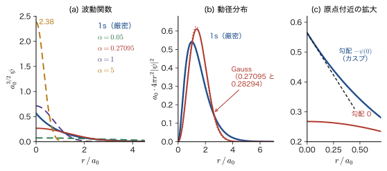
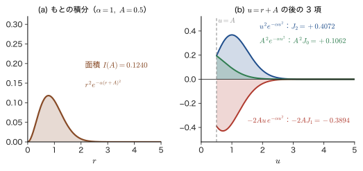
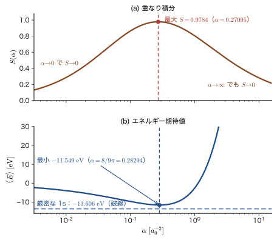
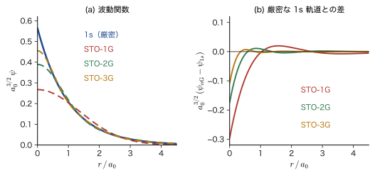
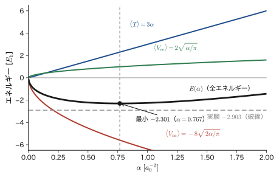
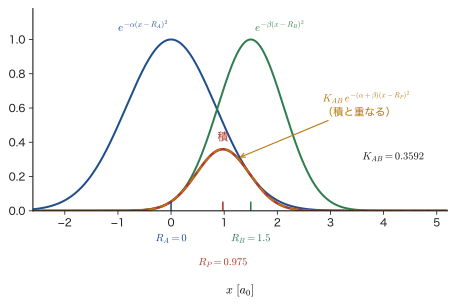
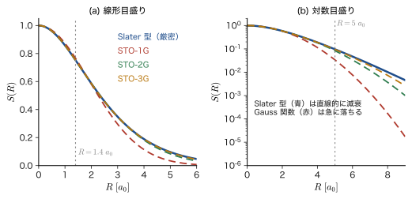
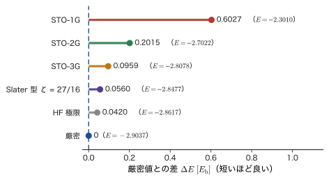

第32章Gauss 関数でつくる試行関数 — STO-1G とヘリウム原子
前の 2 つの章では，試行関数として $e^{-\beta r}$ のような指数関数（Slater 型）と，$e^{-\alpha r^2}$ のような釣鐘形の関数（Gauss 型）の両方を使ってきた．水素原子やヘリウム原子を 1 個だけ手で解くなら，正解の形に近い Slater 型のほうが素直である．ところが，分子や固体の電子状態を計算する市販のプログラムの内部では，圧倒的に Gauss 型の関数が使われている．原子が 2 個以上になると，別々の点に中心をもつ関数の積分が必要になるが，Gauss 関数どうしの積はまた Gauss 関数になるので，積分が閉じた式で書けるからである．一方，Gauss 関数は正解の 1s 軌道とは形が違う（原子核の位置で尖らず，遠くでは急に減衰する）．この欠点は，指数の違う何本かの Gauss 関数を足し合わせて，正解の形を真似ることで補う．
この章では，その最初の一歩として，1 本の Gauss 関数で水素原子の 1s 軌道をできるだけ正確に真似る問題（STO-1G）を，平方完成・置換積分・部分積分・誤差関数という道具だけで，一行も飛ばさずに解く．「重なり積分を最大にする」という基準で最良の指数 $\alpha$ を決めると，重なりは $0.9784$ になる．次に，2 電子の問題であるヘリウム原子に Gauss 関数を 1 本使い，運動エネルギー・核との引力・電子間反発の 3 つの積分を実行して全エネルギーを求める．電子間反発の積分 $1/\abs{\bm{r}_1-\bm{r}_2}$ は，2 つの電子の距離を 3 次元で正しく扱ってはじめて有限な値になる．最後に，Gauss 関数を複数本使う STO-$n$G と，Gauss 関数の積が Gauss 関数になるという Gauss 積の定理から，計算化学で Gauss 型基底が標準になった理由を説明する．
古典物理（AD 03）との関係を 1 つ挙げておく．$e^{-\alpha r^2}$ は，3 次元の調和振動子の基底状態の波動関数の形でもあり（第13章），気体分子の速度分布（Maxwell 分布）や拡散方程式の解にも現れる，物理で最もありふれた関数である．違いは，量子力学ではそれが確率振幅であり，原子核のそばでは Coulomb ポテンシャルのために正解が指数関数的に尖る，という点にある．Gauss 関数は「滑らかすぎる」ので，その差が誤差の原因になる．この誤差を数値で見積もる（水素で約 15 %，ヘリウムで約 21 %）のも，この章の目的である．
- Gauss 関数 $e^{-\alpha r^2}$ の 2 通りの「規格化」（関数の積分が $1$，2 乗の積分が $1$）を区別し，波動関数として正しい規格化定数 $(2\alpha/\pi)^{3/4}$ を導けること
- 水素原子の 1s 軌道と Gauss 関数の重なり積分 $S(\alpha)$ を，平方完成・部分積分・誤差関数を使って解析的に計算し，$S(\alpha)$ を最大にする $\alpha=0.27095$ を求められること
- $S(\alpha)$ の式を数値計算するときの落とし穴（桁あふれ・桁落ち）と，その回避法（erfcx）を説明できること
- 重なり最大の $\alpha$ とエネルギー最小の $\alpha=8/(9\pi)$ の違いと，STO-2G・STO-3G で精度が上がる様子を数値で説明できること
- ヘリウム原子の全エネルギーを Gauss 関数 1 本で計算し，$1/\abs{\bm{r}_1-\bm{r}_2}$ の角度平均 $1/r_{\gt}$ を使って電子間反発の積分 $2\sqrt{\alpha/\pi}$ を導けること
- Gauss 積の定理と Gauss 関数どうしの重なり積分を導き，Gauss 型基底が計算化学で使われる理由（多中心積分）を説明できること
もとにしたノート：望月泰英『物理学ノート 量子力学3』 pp. 36–41（pp. 40，42–44 は白紙）．
32.1 Gauss 関数と規格化 — 2 通りの「1」
32.1.1 Gauss 関数とは
原子核（原点）からの距離を $r=\abs{\bm{r}}$ とする．指数を距離の 2 乗にした関数
\begin{equation} \phi(r)=N\,e^{-\alpha r^2}\qquad(\alpha\gt0) \label{eq:32-gauss} \end{equation}を，（球対称な，すなわち s 型の）Gauss 関数（Gaussian function）という．$N$ は規格化定数，$\alpha$ を Gauss 指数（Gaussian exponent）とよぶ．$\alpha$ が大きいほど関数は原点のまわりに細く鋭く集まり，小さいほど広がる（$\phi$ が $1/\mathrm{e}$ 倍になる距離は $1/\sqrt{\alpha}$ である）．この章では $\alpha$ はこの Gauss 指数だけを表す．スピン関数の $\alpha$（$\ket{\uparrow}$，第VII部）や微細構造定数 $\alpha$（第XI部）とは別のものである．
これに対して，水素様原子の 1s 軌道 $e^{-Zr/a_0}$ のように，指数が距離の 1 乗の関数を Slater 型関数（Slater-type orbital，STO）とよび，Gauss 型の関数を Gauss 型軌道（Gaussian-type orbital，GTO）とよぶ．STO は正しい形をしているが，32.6 節で見るとおり，分子や固体の計算では積分が難しい．GTO は形が正しくないが，積分が簡単である．この章の主題は，その GTO で STO をいかに精度よく真似るかである．
Gauss 関数は原点で最大値 $N$ をとり，勾配は $\dd\phi/\dd r=-2\alpha r\,N e^{-\alpha r^2}$ より原点で $0$ である（釣鐘形）．一方，正解の 1s 軌道 $e^{-Zr/a_0}$ の原点での勾配は $-Z/a_0\times$（原点での値）で，$0$ ではない（カスプ，30.5.5 節）．また，Gauss 関数は遠方で $e^{-\alpha r^2}$ と急減衰するため，指数関数 $e^{-Zr/a_0}$ の裾（$r$ が大きいところの緩やかな減衰）を再現できない．この 2 点が，Gauss 関数が「正解と形が違う」という意味である．
数学の道具：Gauss 積分と積分公式
$\displaystyle\int_{-\infty}^{\infty}e^{-\alpha x^2}\dd x=\sqrt{\pi/\alpha}$（Gauss 積分．大学数学 第7章 7.5）から出発して，この章で繰り返し使う次の公式が得られる．
公式32.1 Gauss 型の積分公式
$\alpha\gt0$ とし，$m=0,1,2,\dots$ とする（第 1 式は，$\Gamma$ 関数を使って $m\gt-1$ の実数まで拡張できる．第 2 式は $(2m-1)!!$ を含むので，$m$ は整数に限る）．
\begin{equation} \int_0^{\infty}x^{2m+1}e^{-\alpha x^2}\dd x=\frac{m!}{2\alpha^{m+1}}\ \biggl(=\frac{\Gamma(m+1)}{2\alpha^{m+1}}\biggr),\qquad \int_0^{\infty}x^{2m}e^{-\alpha x^2}\dd x=\frac{(2m-1)!!}{2^{m+1}\alpha^{m}}\sqrt{\frac{\pi}{\alpha}} \label{eq:32-formula} \end{equation}である（$(2m-1)!!=(2m-1)(2m-3)\cdots3\cdot1$，$(-1)!!=1$）．
導出
第 1 式は，$t=\alpha x^2$ とおいて置換積分する．$\dd t=2\alpha x\dd x$，$x^{2m+1}\dd x=x^{2m}\cdot x\dd x=(t/\alpha)^m\dfrac{\dd t}{2\alpha}$ なので，
$$ \int_0^{\infty}x^{2m+1}e^{-\alpha x^2}\dd x=\frac{1}{2\alpha^{m+1}}\int_0^{\infty}t^m e^{-t}\dd t=\frac{\Gamma(m+1)}{2\alpha^{m+1}}=\frac{m!}{2\alpha^{m+1}} $$となる（ガンマ関数の定義 $\Gamma(m+1)=\int_0^\infty t^me^{-t}\dd t$ と $\Gamma(m+1)=m!$，大学数学 第32章 32.2）．$m=\tfrac12$ を代入すると現れる「$(1/2)!$」は，$\Gamma(\tfrac32)$ のことである（次項と例題32.2）．第 2 式は，部分積分を繰り返して次数を 2 つずつ下げる：
$$ \int_0^{\infty}x^{2m}e^{-\alpha x^2}\dd x=\int_0^\infty x^{2m-1}\cdot xe^{-\alpha x^2}\dd x =\Bigl[x^{2m-1}\cdot\frac{e^{-\alpha x^2}}{-2\alpha}\Bigr]_0^\infty+\frac{2m-1}{2\alpha}\int_0^\infty x^{2m-2}e^{-\alpha x^2}\dd x $$（$m\ge1$ で境界項は $0$）．$m=0$ の値は Gauss 積分の半分 $\tfrac12\sqrt{\pi/\alpha}$ である．漸化式 $I_m=\dfrac{2m-1}{2\alpha}I_{m-1}$ を $m$ 回使えば第 2 式を得る．
（導出終わり）
32.1.2 「関数の積分が 1」となる規格化
Gauss 関数 \eqref{eq:32-gauss} の定数 $N$ を決めよう．まず，関数そのものを全空間で積分した値が $1$ になるように決めてみる．球座標の体積要素 $\dd^3r=r^2\sin\theta\,\dd r\,\dd\theta\,\dd\varphi$（$\varphi$ は方位角）を使い，$\phi$ が角度によらないことから，角度部分の積分を $\displaystyle\int_0^{2\pi}\dd\varphi\int_0^\pi\sin\theta\,\dd\theta=2\pi\cdot2=4\pi$ と先に済ませると，
\begin{equation} \int\phi\,\dd^3r=N\cdot4\pi\int_0^\infty r^2e^{-\alpha r^2}\dd r=1 \label{eq:32-Nint-cond} \end{equation}である．動径積分は，公式 \eqref{eq:32-formula} の第 1 式で $2m+1=2$，すなわち $m=\tfrac12$ とおくと，$\Gamma(\tfrac32)=\tfrac12\Gamma(\tfrac12)=\tfrac12\sqrt{\pi}=\dfrac{\sqrt{\pi}}{2}$（$\Gamma(x+1)=x\Gamma(x)$ と $\Gamma(\tfrac12)=\sqrt{\pi}$）を使って
\begin{equation} \int_0^\infty r^2e^{-\alpha r^2}\dd r=\frac{(1/2)!}{2\alpha^{3/2}}=\frac{\sqrt{\pi}/2}{2\alpha^{3/2}}=\frac{\sqrt{\pi}}{4\alpha^{3/2}} \label{eq:32-r2int} \end{equation}となる．したがって $N\cdot4\pi\cdot\dfrac{\sqrt{\pi}}{4\alpha^{3/2}}=1$ より
$$ N=\frac{1}{4\pi}\cdot\frac{4\alpha^{3/2}}{\sqrt{\pi}}=\frac{\alpha^{3/2}}{\pi^{3/2}}=\Bigl(\frac{\alpha}{\pi}\Bigr)^{3/2} $$を得る．この計算自体は正しい．ただし，これは「$\phi$ を確率密度とみなして総確率を $1$ にする」規格化である．たとえば，3 次元空間にランダムに投げた点の分布 $\rho(\bm{r})=(\alpha/\pi)^{3/2}e^{-\alpha r^2}$（各座標の標準偏差が $1/\sqrt{2\alpha}$ の正規分布）はこの形をしている．しかし，量子力学の波動関数 $\phi$ に対しては，$\phi$ そのものの積分ではなく，$\abs{\phi}^2$ の積分が確率だから，この $N$ は使えない．
32.1.3 波動関数としての規格化
Born の確率解釈（第8章）によれば，位置 $\bm{r}$ の近くの体積 $\dd^3r$ に電子を見いだす確率は $\abs{\phi(\bm{r})}^2\dd^3r$ である．したがって，全空間で電子を見いだす確率が $1$ になる条件，すなわち規格化条件
\begin{equation} \braket{\phi}{\phi}=\int\abs{\phi}^2\dd^3r=\int_0^{2\pi}\!\!\dd\varphi\int_0^\pi\!\!\sin\theta\,\dd\theta\int_0^\infty\!\!\abs{\phi(r)}^2r^2\dd r=1 \label{eq:32-norm-cond} \end{equation}から $N$ を決める．$\abs{\phi}^2=N^2e^{-2\alpha r^2}$ なので，動径積分は式 \eqref{eq:32-r2int} で $\alpha\to2\alpha$ とした $\dfrac{\sqrt{\pi}}{4(2\alpha)^{3/2}}$ である．よって
$$ \braket{\phi}{\phi}=N^2\cdot4\pi\cdot\frac{\sqrt{\pi}}{4(2\alpha)^{3/2}}=N^2\Bigl(\frac{\pi}{2\alpha}\Bigr)^{3/2}=1 \qquad\therefore\quad N=\Bigl(\frac{2\alpha}{\pi}\Bigr)^{3/4} $$である（$4\pi\cdot\sqrt{\pi}/4=\pi^{3/2}$ を使った）．結果をまとめておく．
定義32.1 規格化された s 型 Gauss 関数
Gauss 指数 $\alpha\gt0$ の，3 次元の極座標で波動関数として規格化された s 型 Gauss 関数を
\begin{equation} \phi_\alpha(r)=\Bigl(\frac{2\alpha}{\pi}\Bigr)^{3/4}e^{-\alpha r^2},\qquad\int\abs{\phi_\alpha}^2\dd^3r=1 \label{eq:32-phi-alpha} \end{equation}とかく．以下，この章で「Gauss 関数」と書けば，特に断らない限りこの規格化された関数を指す．
ここに現れる $(2\alpha/\pi)^{3/4}$ は，「関数の積分が $1$」の規格化 $(\alpha/\pi)^{3/2}$ で $\alpha$ を $2\alpha$ に置き換えて（$\abs{\phi}^2$ の指数が $2\alpha$ だから），平方根をとったものである：$\bigl[(2\alpha/\pi)^{3/2}\bigr]^{1/2}=(2\alpha/\pi)^{3/4}$．次元も確認しておく．$\abs{\phi}^2\dd^3r$ が無次元の確率だから，$\phi$ の次元は（長さ）$^{-3/2}$ であり，$\alpha$ は（長さ）$^{-2}$ の次元をもつので，$(2\alpha/\pi)^{3/4}$ も（長さ）$^{-3/2}$ となって整合している（$(\alpha/\pi)^{3/2}$ は（長さ）$^{-3}$ で，これは確率密度の次元である）．
注意：規格化の 2 つの意味を混同しない
「$\int\phi\,\dd^3r=1$」（確率密度としての規格化）から得られる $N=(\alpha/\pi)^{3/2}$ と，「$\int\abs{\phi}^2\dd^3r=1$」（波動関数としての規格化）から得られる $N=(2\alpha/\pi)^{3/4}$ は別のものである．次の例題32.1 のように数値も大きく違う．波動関数には後者を使う．前者を使うと，たとえば重なり積分 $\braket{\psi_{1\mathrm{s}}}{\phi}$ が「重なりの大きさ」という意味を失う（この量が 1 を超えられないという性質，Schwarz の不等式が使えなくなる）．
例題32.1 Gauss 関数の規格化定数と，取り違えたときの影響
Gauss 指数 $\alpha=0.27095\ a_0^{-2}$（この値は次節で「水素原子の 1s 軌道にもっとも近い」指数として現れる）について，(a) $\int\abs{\phi}^2\dd^3r=1$ を満たす $N$，(b) $\int\phi\,\dd^3r=1$ を満たす $N$ を求めよ．(c) (b) の $N$ を波動関数に使うと，ノルム $\braket{\phi}{\phi}$ はいくつになるか．
解答 (a) $N=(2\alpha/\pi)^{3/4}$ に $2\alpha/\pi=0.54190/3.14159=0.172492$ を入れると，$0.172492^{3/4}=\exp\bigl(\tfrac34\ln0.172492\bigr)=\exp\bigl(\tfrac34\times(-1.757\,05)\bigr)=\exp(-1.317\,79)=0.2677$．単位は $a_0^{-3/2}$ である．
(b) $N=(\alpha/\pi)^{3/2}$，$\alpha/\pi=0.086\,246$ より $0.086\,246^{3/2}=0.086\,246\times\sqrt{0.086\,246}=0.086\,246\times0.293\,677=0.02533$ で，単位は $a_0^{-3}$ である．
(c) 式 \eqref{eq:32-norm-cond} に，$N=(\alpha/\pi)^{3/2}$ を代入する．$\braket{\phi}{\phi}=N^2(\pi/2\alpha)^{3/2}=(\alpha/\pi)^3(\pi/2\alpha)^{3/2}=\dfrac{\alpha^{3/2}}{\pi^{3/2}2^{3/2}}=\Bigl(\dfrac{\alpha}{2\pi}\Bigr)^{3/2}$．$\alpha/2\pi=0.043\,123$ だから $\braket{\phi}{\phi}=0.043\,123^{3/2}=0.0090$．すなわち，取り違えた $N$ の関数は電子を全空間で見いだす確率が 0.9 % にしかならない（確率が 1 でない）．
例題32.2 積分公式と $\Gamma(3/2)$，Gauss 関数の平均の大きさ
(a) $\displaystyle\int_0^\infty r^2e^{-\alpha r^2}\dd r=\dfrac{\sqrt{\pi}}{4\alpha^{3/2}}$ を，置換積分（$\Gamma$ 関数）と部分積分の 2 通りで導け．$\alpha=1$ の値も求めよ．(b) 規格化された Gauss 関数 \eqref{eq:32-phi-alpha} について $\expval{r^2}$ と $\expval{r}$ を求め，$\alpha=0.27095\ a_0^{-2}$ で水素原子の 1s 軌道（$\expval{r}=\tfrac32a_0$，$\expval{r^2}=3a_0^2$）と比べよ．
解答 (a) 置換積分：$t=\alpha r^2$ とおくと $\dd t=2\alpha r\dd r$，$r^2\dd r=r\cdot r\dd r=\sqrt{t/\alpha}\cdot\dfrac{\dd t}{2\alpha}$ なので，$\displaystyle\int_0^\infty r^2e^{-\alpha r^2}\dd r=\frac{1}{2\alpha^{3/2}}\int_0^\infty t^{1/2}e^{-t}\dd t=\frac{\Gamma(3/2)}{2\alpha^{3/2}}=\frac{\sqrt{\pi}/2}{2\alpha^{3/2}}=\frac{\sqrt{\pi}}{4\alpha^{3/2}}$．部分積分：$r^2e^{-\alpha r^2}=r\cdot\bigl(-\tfrac{1}{2\alpha}\bigr)\dfrac{\dd}{\dd r}e^{-\alpha r^2}$ なので，$\displaystyle\int_0^\infty r^2e^{-\alpha r^2}\dd r=\Bigl[r\cdot\frac{e^{-\alpha r^2}}{-2\alpha}\Bigr]_0^\infty+\frac{1}{2\alpha}\int_0^\infty e^{-\alpha r^2}\dd r=0+\frac{1}{2\alpha}\cdot\frac12\sqrt{\frac{\pi}{\alpha}}=\frac{\sqrt{\pi}}{4\alpha^{3/2}}$（境界項は $r=0$ で $0$，$r\to\infty$ で $0$）．一致した．$\alpha=1$ では $\sqrt{\pi}/4=1.7725/4=0.4431$ で，数値積分の値 $0.443\,11$ と一致する．
(b) 公式 \eqref{eq:32-formula} で $\alpha\to2\alpha$ として使う．第 2 式（$m=2$）から $\displaystyle\int_0^\infty r^4e^{-2\alpha r^2}\dd r=\frac{3}{2^{3}(2\alpha)^2}\sqrt{\frac{\pi}{2\alpha}}=\frac{3\sqrt{\pi}}{8(2\alpha)^{5/2}}$，第 1 式（$m=1$）から $\displaystyle\int_0^\infty r^3e^{-2\alpha r^2}\dd r=\frac{1!}{2(2\alpha)^2}=\frac{1}{8\alpha^2}$ である．したがって
$$ \expval{r^2}=4\pi N^2\int_0^\infty r^4e^{-2\alpha r^2}\dd r=4\pi\Bigl(\frac{2\alpha}{\pi}\Bigr)^{3/2}\frac{3\sqrt{\pi}}{8(2\alpha)^{5/2}}=\frac{3}{4\alpha},\qquad \expval{r}=4\pi N^2\int_0^\infty r^3e^{-2\alpha r^2}\dd r=\frac{4\pi}{8\alpha^2}\Bigl(\frac{2\alpha}{\pi}\Bigr)^{3/2}=\sqrt{\frac{2}{\pi\alpha}} $$である．$\alpha=0.27095$ を代入すると，$\expval{r^2}=3/(4\times0.27095)=2.768\ a_0^2$，$\expval{r}=\sqrt{2/(\pi\times0.27095)}=\sqrt{2.3496}=1.533\ a_0$ となる．水素の 1s 軌道の $\expval{r^2}=3\ a_0^2$，$\expval{r}=1.5\ a_0$ にかなり近い（$\expval{r}$ の差は 2 %）．
イメージ：Gauss 関数は調和振動子の基底状態
1 次元の調和振動子の基底状態の波動関数は $\psi_0\propto e^{-m\omega x^2/2\hbar}$（第13章）で，3 次元の等方的な調和振動子の基底状態は $\propto e^{-m\omega r^2/2\hbar}$（14.7.4 節）である．したがって，Gauss 関数 $e^{-\alpha r^2}$ は $\alpha=m_{\mathrm e}\omega/(2\hbar)$ をもつ調和振動子の基底状態と同じ形をしている．「Gauss 関数を試行関数にとって原子のエネルギーを最小にする」ことは，「電子を仮想的な調和ポテンシャルの井戸に閉じ込め，その井戸の強さ $\omega$ を，原子のエネルギーが最小になるように選ぶ」ことと同じである．運動エネルギーが $\expval{T}=\tfrac32\alpha\,\hbar^2/m_{\mathrm e}=\tfrac34\hbar\omega$（調和振動子の零点エネルギー $\tfrac32\hbar\omega$ の半分．virial 定理）になる理由も，これで分かる．
32.2 STO-1G の考え方 — 重なりを最大にする
32.2.1 水素原子の 1s 軌道に「近い」Gauss 関数をつくる
核電荷 $Ze_0$ の水素様原子（電子 1 個）の基底状態，すなわち 1s 軌道の厳密解は（第15章 15.7）
\begin{equation} \psi_{1\mathrm{s}}(r)=\frac{1}{\sqrt{\pi}}\Bigl(\frac{Z}{a_0}\Bigr)^{3/2}e^{-Zr/a_0} \label{eq:32-psi1s} \end{equation}である（$Z=1$ が水素原子）．規格化は，$\displaystyle\int\abs{\psi_{1\mathrm{s}}}^2\dd^3r=4\pi\cdot\frac{1}{\pi}\Bigl(\frac{Z}{a_0}\Bigr)^3\int_0^\infty r^2e^{-2Zr/a_0}\dd r=4\Bigl(\frac{Z}{a_0}\Bigr)^3\cdot\frac{2}{(2Z/a_0)^3}=1$ で確かめられる（$\displaystyle\int_0^\infty r^2e^{-\beta r}\dd r=\frac{\Gamma(3)}{\beta^3}=\frac{2}{\beta^3}$ を使った．$t=\beta r$ と置換すると $\Gamma$ 関数の定義 $\Gamma(3)=\int_0^\infty t^2e^{-t}\dd t=2$ になる．ここは指数が距離の 1 乗なので，Gauss 型の公式32.1 ではなく $\Gamma$ 関数の定義を使う）．前係数が $1/\pi$ ではなく $1/\sqrt{\pi}$ であることに注意する．関連シミュレーターの $a_{\mathrm B}$ が本書の $a_0$ と同じ量であることは，30.5.1 節で述べた．
正解が分かっているのに，なぜ近似の関数をつくるのか．理由は，分子や固体の計算では正解の形がどこにも書いていないからである．そこで，多くの原子・分子に共通して使える「部品」（基底関数）を，正解が分かっている水素様原子で先に用意しておく．部品に Gauss 関数を使うなら，まず「1 本の Gauss 関数が 1s 軌道に一番近くなるのは，指数 $\alpha$ がいくつのときか」を決めなければならない．これがこの節と次節の問題である．
「近い」ことを測るものさしとして，最も素朴なものは，2 つの関数の重なりである．重なりが大きい（$1$ に近い）ほど，2 つの関数は似ている．
定義32.2 重なり積分
規格化された 2 つの実関数 $\psi(\bm{r})$，$\phi(\bm{r})$ の重なり積分（overlap integral）を
\begin{equation} S=\braket{\psi}{\phi}=\int\psi(\bm{r})\,\phi(\bm{r})\dd^3r \label{eq:32-S-def} \end{equation}で定義する．規格化された関数では $\abs{S}\le1$ で，$S=1$ となるのは $\phi=\psi$ のときだけである（Schwarz の不等式）．
証明：$\abs{S}\le1$（Schwarz の不等式）
実数の定数 $S=\braket{\psi}{\phi}$ を使って，$\psi-S\phi$ の 2 乗の積分を考える．2 乗は負にならないので，規格化 $\int\psi^2\dd^3r=\int\phi^2\dd^3r=1$ を使うと，
$$ 0\le\int(\psi-S\phi)^2\dd^3r=\int\psi^2\dd^3r-2S\int\psi\phi\,\dd^3r+S^2\int\phi^2\dd^3r=1-2S\cdot S+S^2=1-S^2 $$となる．したがって $S^2\le1$，すなわち $\abs{S}\le1$ である．等号 $S^2=1$ が成り立つのは，$(\psi-S\phi)^2$ の積分が $0$ のとき，つまり至るところ $\psi=S\phi$ のときだけで，$S=+1$ なら $\psi=\phi$ である（$S=-1$ なら $\psi=-\phi$）．また，規格化された関数の差の 2 乗の積分は $\int(\psi-\phi)^2\dd^3r=2-2S$ となり，$S$ が $1$ に近いほど 2 つの関数の違いが小さいことも分かる．
（証明終わり）
この性質は，ベクトルの内積とのアナロジーで理解できる．規格化された関数は，関数空間（10.2 節）の長さ $1$ のベクトルで，重なり積分は 2 つの単位ベクトルの内積，すなわちそのあいだの角度 $\theta$ の $\cos\theta$ に対応する．2 つのベクトルが同じ向きなら $\cos\theta=1$，直交するなら $0$ である．$\phi$ を $\psi$ に近づけるとは，$\phi$ の「向き」を $\psi$ の向きに近づけることであり，$S$ を $1$ に近づけることである．
32.2.2 重なり積分 $S(\alpha)$ の定義
1s 軌道 \eqref{eq:32-psi1s} と，Gauss 指数 $\alpha$ の規格化された Gauss 関数 \eqref{eq:32-phi-alpha} の重なり積分を $S(\alpha)$ とかく．球座標で書くと，
$$ S(\alpha)=\int_0^{2\pi}\!\!\int_0^{\pi}\!\!\int_0^{\infty}\psi_{1\mathrm{s}}(r)\,\phi_\alpha(r)\,r^2\sin\theta\,\dd r\,\dd\theta\,\dd\varphi $$である．被積分関数の $\psi_{1\mathrm{s}}$ と $\phi_\alpha$ は $r$ だけの関数なので，角度部分は独立に積分できて，
$$ S(\alpha)=\int_0^{2\pi}\dd\varphi\int_0^\pi\sin\theta\,\dd\theta\int_0^\infty\psi_{1\mathrm{s}}(r)\,\phi_\alpha(r)\,r^2\dd r =2\pi\cdot2\int_0^\infty\psi_{1\mathrm{s}}(r)\,\phi_\alpha(r)\,r^2\dd r $$（$\int_0^\pi\sin\theta\,\dd\theta=[-\cos\theta]_0^\pi=2$）となる．$\psi_{1\mathrm{s}}$ と $\phi_\alpha$ を代入すると，
\begin{equation} S(\alpha)=4\pi\cdot\frac{1}{\sqrt{\pi}}\Bigl(\frac{Z}{a_0}\Bigr)^{3/2}\Bigl(\frac{2\alpha}{\pi}\Bigr)^{3/4}\int_0^\infty e^{-Zr/a_0}\,e^{-\alpha r^2}\,r^2\dd r =4\sqrt{\pi}\Bigl(\frac{Z}{a_0}\Bigr)^{3/2}\Bigl(\frac{2\alpha}{\pi}\Bigr)^{3/4}\int_0^\infty e^{-Zr/a_0-\alpha r^2}\,r^2\dd r \label{eq:32-S-radial} \end{equation}である（$4\pi/\sqrt{\pi}=4\sqrt{\pi}$）．残る積分 $\int_0^\infty e^{-Zr/a_0-\alpha r^2}r^2\dd r$ は，指数の中に $r$ の 1 次式と 2 次式が混ざっているので，公式 \eqref{eq:32-formula} では計算できない．これを次節で解析的に実行する．この $S(\alpha)$ が最大になる $\alpha$ が，「もっとも 1s 軌道に近い Gauss 関数」の指数になる．
32.2.3 なぜ重なりを最大にするのか
重なり積分を最大にする基準は，変分原理（第30章）と深く結びついている．厳密な固有関数を $\psi_k$，エネルギーを $E_k$（$k=0$ が基底状態 1s，$E_0\le E_1\le\cdots$，連続状態も含めて $k$ で数える）とし，規格化された $\phi$ を，30.2 節のように展開する：$\phi=\sum_kc_k\psi_k$，$c_k=\braket{\psi_k}{\phi}$．規格化 $\braket{\phi}{\phi}=1$ から $\sum_k\abs{c_k}^2=1$ である．基底状態の係数 $c_0=\braket{\psi_{1\mathrm{s}}}{\phi}=S$ が重なり積分であるから，エネルギー期待値は
$$ \expval{E}=\mel{\phi}{\hat{H}}{\phi}=\sum_k\abs{c_k}^2E_k,\qquad \expval{E}-E_0=\sum_{k\ge1}\abs{c_k}^2\,(E_k-E_0)\ \ge\ (E_1-E_0)\sum_{k\ge1}\abs{c_k}^2=(E_1-E_0)\,(1-S^2) $$となる（$k\ge1$ の各項で $E_k-E_0\ge E_1-E_0$ を使い，$\sum_{k\ge1}\abs{c_k}^2=1-\abs{c_0}^2=1-S^2$ とした）．つまり，エネルギーの誤差は，基底状態の成分が足りない割合 $1-S^2$ に，励起エネルギーの最小値 $E_1-E_0$ を掛けた値より小さくならない．$S^2=\abs{c_0}^2$ は「試行関数のなかに厳密な基底状態がどれだけ含まれているか」という割合（確率）で，$S$ を大きくすることは，エネルギー誤差の下限を小さくすることである．
ただし，これはエネルギーの下限であって，$S$ を最大にした $\alpha$ が $\expval{E}$ を最小にする $\alpha$ とは限らない．実際に両者が少し違うことは 32.4.4 節で確かめる．重なり積分は，エネルギーを計算しなくても（つまりハミルトニアンを使わなくても）定義できる量なので，基底関数を「あらかじめ 1 度だけ」決めておくのに便利である．
32.2.4 原子単位と，$Z$ を 1 にしてよい理由
これから何度も $a_0$ と $Z$ が式に現れるので，式を簡単にするために，原子単位（atomic units）を使う．長さの単位を Bohr 半径 $a_0$，エネルギーの単位を Hartree エネルギー $E_{\mathrm h}=\dfrac{e_0^2}{4\pi\varepsilon_0a_0}=\dfrac{\hbar^2}{m_{\mathrm e}a_0^2}=27.211\,386\ \mathrm{eV}$ とし，$\hbar=m_{\mathrm e}=e_0^2/(4\pi\varepsilon_0)=1$ とおく．このとき $a_0=1$ で，式 \eqref{eq:32-psi1s} は $\psi_{1\mathrm{s}}(r)=\dfrac{1}{\sqrt{\pi}}Z^{3/2}e^{-Zr}$ となり，$a_0$ を書き込む必要がなくなる．Gauss 指数 $\alpha$ は単位 $a_0^{-2}$ で測った数値，エネルギーは $E_{\mathrm h}$ で測った数値になる．この単位系は，方程式を無次元化するという考え方から第33章で改めて導入する．この章では，「長さを $a_0$ の何倍で，エネルギーを $E_{\mathrm h}$ の何倍で測るか」を約束するだけと思ってよい．$a_0$ を残した式は，長さを $r/a_0$，Gauss 指数を $\alpha a_0^2$ という無次元の数に置き換えれば，そのまま原子単位の式になる（たとえば $Zr/a_0\to Zr$，$\alpha r^2\to(\alpha a_0^2)(r/a_0)^2$）．
重なり積分 $S$ は無次元量なので，$a_0$ の有無によらない．
次に，核電荷 $Z$ を一般の値にして計算する意味を説明する．式 \eqref{eq:32-S-radial}（原子単位）で $r=r'/Z$ と変数変換すると，$r^2\dd r=r'^2\dd r'/Z^3$，$e^{-Zr}=e^{-r'}$，$e^{-\alpha r^2}=e^{-(\alpha/Z^2)r'^2}$ となって，
\begin{equation} S(\alpha;Z)=4\sqrt{\pi}\,Z^{3/2}\Bigl(\frac{2\alpha}{\pi}\Bigr)^{3/4}\frac{1}{Z^3}\int_0^\infty e^{-r'-(\alpha/Z^2)r'^2}r'^2\dd r'=S\Bigl(\frac{\alpha}{Z^2};1\Bigr) \label{eq:32-Sscale} \end{equation}を得る（前係数の $Z^{3/2}\cdot Z^{-3}=Z^{-3/2}$ を $(2\alpha/\pi)^{3/4}$ の中に押し込むと，$(Z^{-2})^{3/4}=Z^{-3/2}$ だから $\bigl(2\alpha/(Z^2\pi)\bigr)^{3/4}$ になる．これは $S(\alpha/Z^2;1)$ の前係数 $\bigl(2(\alpha/Z^2)/\pi\bigr)^{3/4}$ にほかならない）．すなわち，核電荷 $Z$ の重なり積分は，$Z=1$ の重なり積分の $\alpha$ を $Z^2$ で割ったものである．最良の指数は $\alpha_{\mathrm{opt}}(Z)=Z^2\alpha_{\mathrm{opt}}(1)$ になり，最大の重なりの値は $Z$ によらない．この性質は，1s 軌道の大きさが $a_0/Z$ に縮むこと（18.1 節のスケーリング）の反映である．以下では，特に断らなければ原子単位を使い，$Z$ を残した形で計算する（ヘリウムの $Z=2$ にも使うため）．
32.2.5 STO-$n$G という名前
Slater 型関数 $e^{-\zeta r}$（$\zeta$ は軌道指数）1 本を，$n$ 本の Gauss 関数の線形結合 $\sum_{i=1}^n d_i\,e^{-\alpha_ir^2}$ で近似したものを STO-$n$G（Slater-type orbital を $n$ 本の Gaussian で近似したもの，読み方は「エスティーオー・エヌ・ジー」）という．この節と次節で考えるのは $n=1$ の場合，つまり 1 本の Gauss 関数で 1 本の 1s Slater 関数（$\zeta=1$，水素原子）を真似る STO-1G である．$n=2,3$ の場合は 32.4 節と 32.6 節で扱う．
例題32.3 $\alpha$ を変えて重なり積分を数値で見る
水素原子（$Z=1$，原子単位）について，重なり積分 $S(\alpha)=4\sqrt{\pi}\,(2\alpha/\pi)^{3/4}\displaystyle\int_0^\infty e^{-r-\alpha r^2}r^2\dd r$ を，$\alpha=0.05,\ 0.271,\ 1,\ 5$ で数値積分せよ．また，結果から，$\alpha$ が小さすぎる場合と大きすぎる場合の物理的な意味を述べよ．
解答 数値積分（台形則でも，計算機のライブラリでもよい．積分区間は，被積分関数が十分小さくなる $r=0$〜$40\ a_0$ 程度でよい）を実行すると，
| $\alpha$（$a_0^{-2}$） | $0.05$ | $0.271$ | $1$ | $5$ |
|---|---|---|---|---|
| $\displaystyle\int_0^\infty e^{-r-\alpha r^2}r^2\dd r$ | $1.2864$ | $0.5155$ | $0.1592$ | $0.02446$ |
| 前係数 $4\sqrt{\pi}\,(2\alpha/\pi)^{3/4}$ | $0.5343$ | $1.8979$ | $5.0530$ | $16.896$ |
| 重なり積分 $S(\alpha)$ | $0.6873$ | $0.9784$ | $0.8046$ | $0.4132$ |
解析式との照合． $\alpha=1$ の値は，次節で導く式 \eqref{eq:32-S-complete}（$Z=1$）でも手計算できる．$\dfrac{2\alpha+Z^2}{8\alpha^2}=\dfrac38$，$\sqrt{\pi/\alpha}=\sqrt{\pi}=1.77245$，$e^{Z^2/4\alpha}\operatorname{erfc}\bigl(Z/2\sqrt{\alpha}\bigr)=e^{1/4}\operatorname{erfc}(0.5)=1.28403\times0.47950=0.61569$ だから，ブラケットの中は $\tfrac38\times1.77245\times0.61569-\tfrac14=0.40923-0.25=0.15923$ である．これは表32.1 の積分の値 $0.1592$ にほかならず，前係数 $5.0530$ を掛けると $S(1)=5.0530\times0.15923=0.8046$ となって，数値積分の値と一致する．
$\alpha=0.271$ 付近で $S$ は $1$ にもっとも近くなる．$\alpha=0.05$ の Gauss 関数は 1s 軌道よりずっと広がっていて（$\expval{r}=\sqrt{2/(\pi\alpha)}=3.57\ a_0$），核の近くの高い山を覆えない．$\alpha=5$ の Gauss 関数は逆に鋭く縮んでいて（$\expval{r}=0.36\ a_0$），1s 軌道の裾（$r\gtrsim2\ a_0$ の広い領域）に重ならない．どちらも $S$ が小さい．図32.1 (a) でこの様子を見る．

例題32.4 重なりから見積もるエネルギー誤差の下限
水素原子（$Z=1$）の 1s 軌道に対して，$\alpha=0.27095$ の Gauss 関数の重なり積分は $S=0.9784$ である．32.2.3 節の不等式を使って，$\expval{E}-E_0$ の下限を eV で求めよ．実際の値（Gauss 関数の $\expval{E}=-11.5436\ \mathrm{eV}$，$E_0=-13.6057\ \mathrm{eV}$）と比べよ．
解答 励起エネルギーの最小値は，水素の $n=2$ の準位との差で，$E_1-E_0=-\tfrac18E_{\mathrm h}-\bigl(-\tfrac12E_{\mathrm h}\bigr)=\tfrac38E_{\mathrm h}=0.375\times27.2114\ \mathrm{eV}=10.204\ \mathrm{eV}$ である．また，$1-S^2=1-0.9784^2=1-0.95727=0.04273$ だから，下限は $10.204\times0.04273=0.436\ \mathrm{eV}$ である．実際の誤差は $-11.5436-(-13.6057)=2.062\ \mathrm{eV}$ で，下限（$0.44\ \mathrm{eV}$）より確かに大きい．下限が実際の誤差の 5 分の 1 程度なのは，Gauss 関数に混ざる励起状態成分の多くが $E_1$ よりずっと高い状態（連続状態を含む）だからである．重なり $S$ が $1$ に近い（$S^2=0.957$，すなわち試行関数の $95.7\ \%$ が 1s 軌道の成分）のに，エネルギーの誤差が大きい（約 $15\ \%$）ことも読み取れる．
32.3 重なり積分を計算する — 平方完成・誤差関数・部分積分
32.3.1 指数の平方完成
式 \eqref{eq:32-S-radial} の動径積分 $\displaystyle\int_0^\infty e^{-Zr/a_0-\alpha r^2}r^2\dd r$ を計算する．この節では，まず Bohr 半径 $a_0$ を残したまま計算し（32.3.4 節まで），その後で原子単位に書き直す（32.3.5 節）．
面倒でも，きちんと導出する
この先，式は長くなる．しかし，使う道具は 4 つだけである：平方完成，置換積分，部分積分，誤差関数．各行で「何をしたか」を確かめながら 1 行ずつたどれば，途中で分からなくなることはない．計算の全体の流れは，「指数の $r$ の 1 次式と 2 次式を，平方完成で $(r+A)^2$ の 1 つにまとめる」→「$u=r+A$ と置換して，被積分関数の $r^2$ を $(u-A)^2$ に直す」→「3 つの積分に分ける」→「それぞれを部分積分と誤差関数で計算する」→「足し合わせる」の 5 段階である．
指数の中身を，$r$ について平方完成する．$-\alpha r^2-\dfrac{Z}{a_0}r$ から $-\alpha$ をくくり出し，$(r+A)^2=r^2+2Ar+A^2$ の形をつくる（$2A=\dfrac{Z}{a_0\alpha}$ とおく）と，
\begin{equation} \begin{aligned} -\alpha r^2-\frac{Z}{a_0}r&=-\alpha\Bigl(r^2+\frac{Z}{a_0\alpha}\,r\Bigr)=-\alpha\Bigl\{\Bigl(r+\frac{Z}{2a_0\alpha}\Bigr)^2-\Bigl(\frac{Z}{2a_0\alpha}\Bigr)^2\Bigr\}\\ &=-\alpha\Bigl(r+\frac{Z}{2a_0\alpha}\Bigr)^2+\alpha\,\frac{Z^2}{4a_0^2\alpha^2}=-\alpha(r+A)^2+\frac{Z^2}{4a_0^2\alpha} \end{aligned}\qquad\Bigl(A\equiv\frac{Z}{2a_0\alpha}\Bigr) \label{eq:32-complete-square} \end{equation}となる．$\alpha A^2=\dfrac{Z^2}{4a_0^2\alpha}$ である．したがって，$e^{-Zr/a_0-\alpha r^2}=e^{Z^2/(4a_0^2\alpha)}\,e^{-\alpha(r+A)^2}$ で，式 \eqref{eq:32-S-radial} は
\begin{equation} S(\alpha)=4\sqrt{\pi}\Bigl(\frac{Z}{a_0}\Bigr)^{3/2}\Bigl(\frac{2\alpha}{\pi}\Bigr)^{3/4}e^{Z^2/(4a_0^2\alpha)}\int_0^\infty e^{-\alpha(r+A)^2}\,r^2\dd r \label{eq:32-S-with-A} \end{equation}と書き直せる．あとは，積分 $I(A)\equiv\displaystyle\int_0^\infty e^{-\alpha(r+A)^2}r^2\dd r$ を計算すればよい．指数がすっきりした 1 つの Gauss 関数になったので，$r$ を $r+A$ に置き換えれば公式 \eqref{eq:32-formula} が使えそうに見えるが，積分区間が $0$ から始まるため，置換すると下端が $A$ に変わる．このため，Gauss 積分の値だけでは済まず，次に導入する誤差関数が必要になる．
32.3.2 誤差関数と余誤差関数
$e^{-t^2}$ の原始関数は，初等関数（多項式・指数関数・三角関数・対数関数とその合成）では書けない．そこで，$e^{-t^2}$ を $0$ から $x$ まで積分した値そのものを新しい関数として定義して名前をつける．こういう「初等関数で書けない積分」を表すために新しい関数を定義するのは，数学でよく使う手法である．
定義32.3 誤差関数と余誤差関数
誤差関数（error function）$\operatorname{erf}(x)$ と余誤差関数（complementary error function）$\operatorname{erfc}(x)$ を
\begin{equation} \operatorname{erf}(x)=\frac{2}{\sqrt{\pi}}\int_0^xe^{-t^2}\dd t,\qquad \operatorname{erfc}(x)=1-\operatorname{erf}(x)=\frac{2}{\sqrt{\pi}}\int_x^\infty e^{-t^2}\dd t \label{eq:32-erf-def} \end{equation}で定義する．
2 つの表し方が等しいこと（$1-\operatorname{erf}(x)=\dfrac{2}{\sqrt{\pi}}\displaystyle\int_x^\infty e^{-t^2}\dd t$）は，Gauss 積分 $\displaystyle\int_0^\infty e^{-t^2}\dd t=\dfrac{\sqrt{\pi}}{2}$ から出る．実際，
$$ \operatorname{erfc}(x)=1-\operatorname{erf}(x)=\frac{2}{\sqrt{\pi}}\int_0^\infty e^{-t^2}\dd t+\frac{2}{\sqrt{\pi}}\int_x^0e^{-t^2}\dd t=\frac{2}{\sqrt{\pi}}\int_x^\infty e^{-t^2}\dd t $$である．最初の等号の右辺では，$1=\dfrac{2}{\sqrt{\pi}}\cdot\dfrac{\sqrt{\pi}}{2}=\dfrac{2}{\sqrt{\pi}}\displaystyle\int_0^\infty e^{-t^2}\dd t$ と書き換え，$\operatorname{erf}(x)=-\dfrac{2}{\sqrt{\pi}}\displaystyle\int_x^0e^{-t^2}\dd t$（積分の向きを逆にした）を引いた．最後の等号では，積分区間 $[0,\infty)$ と $[x,0]$ をつなげて $[x,\infty)$ にした．
係数 $2/\sqrt{\pi}$ は，$x\to\infty$ で $\operatorname{erf}(x)\to1$ となるようにつけてある．図32.2 のように，$e^{-t^2}$ の曲線の下の $t\ge0$ の面積 $\sqrt{\pi}/2$ のうち，$0$ から $x$ までが $\operatorname{erf}(x)$，$x$ から先が $\operatorname{erfc}(x)$ に（$2/\sqrt{\pi}$ 倍して）対応する．したがって $\operatorname{erf}(0)=0$，$\operatorname{erfc}(0)=1$，$\operatorname{erf}(\infty)=1$，$\operatorname{erfc}(\infty)=0$ で，$\operatorname{erfc}(x)$ は $x$ とともに $1$ から $0$ へ単調に減少する．$\operatorname{erf}$ は奇関数（$\operatorname{erf}(-x)=-\operatorname{erf}(x)$，被積分関数が偶関数だから）である．
| $x$ | $0$ | $0.5$ | $0.7071$ | $1$ | $2$ | $3$ |
|---|---|---|---|---|---|---|
| $\operatorname{erf}(x)$ | $0$ | $0.5205$ | $0.6827$ | $0.8427$ | $0.99532$ | $0.999978$ |
| $\operatorname{erfc}(x)$ | $1$ | $0.4795$ | $0.3173$ | $0.1573$ | $0.004678$ | $2.21\times10^{-5}$ |
数学の道具：誤差関数の性質
誤差関数は，統計学の正規分布の累積確率と同じものである．標準正規分布の密度 $\dfrac{1}{\sqrt{2\pi}}e^{-z^2/2}$ で $z=\sqrt{2}\,t$ とおくと，$P(\abs{Z}\le a)=\operatorname{erf}(a/\sqrt{2})$ となる．たとえば $a=1$（$1\sigma$ 以内）なら $\operatorname{erf}(0.7071)=0.6827$，外側の確率は $\operatorname{erfc}(0.7071)=0.3173$ である．誤差関数の定義と性質は AD 02 第32章の 32.1 節にまとめてあり，$\Gamma$ 関数との関係は 32.2 節にある．名前（error function）は，誤差の理論に由来する．
例題32.5 誤差関数の値と正規分布
(a) $\displaystyle\int_x^\infty e^{-t^2}\dd t=\dfrac{\sqrt{\pi}}{2}\operatorname{erfc}(x)$ を確かめよ．(b) 標準正規分布に従う量 $Z$ が $\abs{Z}\gt1$ となる確率を，誤差関数で表して数値を求めよ．
解答 (a) 定義 \eqref{eq:32-erf-def} の第 2 式の両辺に $\sqrt{\pi}/2$ を掛けるだけである．$x=0$ で $\dfrac{\sqrt{\pi}}{2}\operatorname{erfc}(0)=\dfrac{\sqrt{\pi}}{2}$ となり，Gauss 積分の半分に一致する．
(b) 標準正規分布の密度 $p(z)=\dfrac{1}{\sqrt{2\pi}}e^{-z^2/2}$ について，$P(\abs{Z}\gt1)=2\displaystyle\int_1^\infty p(z)\dd z$．$z=\sqrt{2}\,t$（$\dd z=\sqrt{2}\dd t$）とおくと $z=1$ は $t=1/\sqrt{2}$ に対応し，$P=2\cdot\dfrac{1}{\sqrt{2\pi}}\sqrt{2}\displaystyle\int_{1/\sqrt2}^\infty e^{-t^2}\dd t=\dfrac{2}{\sqrt{\pi}}\int_{1/\sqrt2}^\infty e^{-t^2}\dd t=\operatorname{erfc}\Bigl(\dfrac{1}{\sqrt{2}}\Bigr)=0.3173$ である．すなわち，$1\sigma$ より外側に出る確率は約 $31.7\ \%$ である．
32.3.3 積分 $I(A)$ の計算 — 置換・3 つの項・部分積分
いよいよ積分 $I(A)=\displaystyle\int_0^\infty e^{-\alpha(r+A)^2}r^2\dd r$ を計算する．結果を先に述べると次のようになる．
公式32.2 $\displaystyle\int_0^\infty e^{-\alpha(r+A)^2}r^2\dd r$
$\alpha\gt0$，$A\ge0$ に対して，
\begin{equation} I(A)=\int_0^\infty e^{-\alpha(r+A)^2}r^2\dd r=\Bigl(A^2+\frac{1}{2\alpha}\Bigr)\frac12\sqrt{\frac{\pi}{\alpha}}\,\operatorname{erfc}\bigl(\sqrt{\alpha}\,A\bigr)-\frac{A}{2\alpha}\,e^{-\alpha A^2} \label{eq:32-lemma} \end{equation}導出：置換・3 つの項・部分積分・誤差関数
[i] 置換． $u=r+A$ とおく．$r$ が $0\to\infty$ のとき $u$ は $A\to\infty$ で，$\dd u=\dd r$，$r=u-A$ だから，
$$ I(A)=\int_A^\infty e^{-\alpha u^2}(u-A)^2\dd u =\underbrace{\int_A^\infty u^2e^{-\alpha u^2}\dd u}_{J_2}-2A\underbrace{\int_A^\infty u\,e^{-\alpha u^2}\dd u}_{J_1}+A^2\underbrace{\int_A^\infty e^{-\alpha u^2}\dd u}_{J_0} $$と 3 つの項に分かれる（$(u-A)^2=u^2-2Au+A^2$）．$J_0,J_1,J_2$ を 1 つずつ計算する．
[ii] 第 3 項 $J_0$． $t=\sqrt{\alpha}\,u$ と再び置換する．$u=A$ で $t=\sqrt{\alpha}A$，$\dd u=\dd t/\sqrt{\alpha}$ だから，誤差関数の定義（例題32.5 (a)）を使って
$$ J_0=\int_{\sqrt{\alpha}A}^\infty e^{-t^2}\frac{1}{\sqrt{\alpha}}\dd t=\frac{1}{\sqrt{\alpha}}\cdot\frac{\sqrt{\pi}}{2}\operatorname{erfc}\bigl(\sqrt{\alpha}A\bigr)=\frac12\sqrt{\frac{\pi}{\alpha}}\operatorname{erfc}\bigl(\sqrt{\alpha}A\bigr) $$[iii] 第 2 項 $J_1$． $u\,e^{-\alpha u^2}=-\dfrac{1}{2\alpha}\dfrac{\dd}{\dd u}e^{-\alpha u^2}$ が原始関数を与えるので
$$ J_1=\Bigl[\frac{1}{-2\alpha}e^{-\alpha u^2}\Bigr]_A^\infty=0+\frac{e^{-\alpha A^2}}{2\alpha}=\frac{e^{-\alpha A^2}}{2\alpha} $$[iv] 第 1 項 $J_2$． $u^2e^{-\alpha u^2}=u\cdot\bigl(u\,e^{-\alpha u^2}\bigr)=u\cdot\Bigl(-\dfrac{1}{2\alpha}\Bigr)\dfrac{\dd}{\dd u}e^{-\alpha u^2}$ と見て，部分積分 $\displaystyle\int_A^\infty f\,g'\dd u=[fg]_A^\infty-\int_A^\infty f'g\dd u$（$f=u$，$g=-\dfrac{1}{2\alpha}e^{-\alpha u^2}$）を使う：
$$ J_2=\Bigl[u\cdot\frac{1}{-2\alpha}e^{-\alpha u^2}\Bigr]_A^\infty+\frac{1}{2\alpha}\int_A^\infty e^{-\alpha u^2}\dd u=\frac{A}{2\alpha}e^{-\alpha A^2}+\frac{1}{2\alpha}J_0 $$（境界項は，上端 $u\to\infty$ では $u\,e^{-\alpha u^2}\to0$，下端では $-\bigl[A\cdot\frac{1}{-2\alpha}e^{-\alpha A^2}\bigr]=+\frac{A}{2\alpha}e^{-\alpha A^2}$．また，$-\int f'g\dd u=-\int_A^\infty1\cdot\bigl(-\tfrac{1}{2\alpha}e^{-\alpha u^2}\bigr)\dd u=+\tfrac{1}{2\alpha}J_0$）．右辺第 2 項に現れた積分は，第 3 項 $J_0$ とまったく同じ積分である．
[v] 積分結果の和． $I(A)=J_2-2AJ_1+A^2J_0$ に代入すると，
$$ \begin{aligned} I(A)&=\frac{A}{2\alpha}e^{-\alpha A^2}+\frac{1}{2\alpha}\cdot\frac12\sqrt{\frac{\pi}{\alpha}}\operatorname{erfc}\bigl(\sqrt{\alpha}A\bigr)-2A\cdot\frac{e^{-\alpha A^2}}{2\alpha}+A^2\cdot\frac12\sqrt{\frac{\pi}{\alpha}}\operatorname{erfc}\bigl(\sqrt{\alpha}A\bigr)\\ &=\Bigl(A^2+\frac{1}{2\alpha}\Bigr)\frac12\sqrt{\frac{\pi}{\alpha}}\operatorname{erfc}\bigl(\sqrt{\alpha}A\bigr)-\frac{A}{2\alpha}e^{-\alpha A^2} \end{aligned} $$を得る．2 行目では，$\operatorname{erfc}$ を含む項（$\tfrac{1}{2\alpha}$ と $A^2$）を 1 つにまとめ，$e^{-\alpha A^2}$ を含む項（$\tfrac{A}{2\alpha}-\tfrac{2A}{2\alpha}=-\tfrac{A}{2\alpha}$）を 1 つにまとめた．
（導出終わり）
図32.3 に，この計算の幾何学的な意味を示す．左は，もとの積分 $I(A)$ が，被積分関数 $r^2e^{-\alpha(r+A)^2}$ の曲線の下の面積であること．右は，置換 $u=r+A$ によって積分の下端が $A$ に移り，被積分関数が 3 つの項に分かれること（$J_2$ の面積 $0.407$ から，$2AJ_1$ の面積 $0.389$ を引き，$A^2J_0$ の面積 $0.106$ を足したものが $I(A)=0.124$）を表す．

例題32.6 公式32.2 を数値で確かめる
$\alpha=1$，$A=0.5$ について，3 つの積分 $J_2,\ 2AJ_1,\ A^2J_0$ を公式の各部分から計算し，$I(A)$ を求めよ．また，$\displaystyle\int_0^\infty e^{-(r+0.5)^2}r^2\dd r$ を数値積分して比べよ．
解答 $e^{-\alpha A^2}=e^{-0.25}=0.778\,801$，$\operatorname{erfc}(0.5)=0.479\,500$，$\dfrac12\sqrt{\pi/\alpha}=\dfrac12\sqrt{\pi}=0.886\,227$ である．
$J_0=0.886\,227\times0.479\,500=0.424\,946$，$J_1=\dfrac{0.778\,801}{2}=0.389\,400$，$J_2=\dfrac{A}{2\alpha}e^{-\alpha A^2}+\dfrac{1}{2\alpha}J_0=0.25\times0.778\,801+0.5\times0.424\,946=0.194\,700+0.212\,473=0.407\,173$．したがって 3 つの項は
$$ J_2=0.40717,\qquad2AJ_1=1\times0.389\,400=0.38940,\qquad A^2J_0=0.25\times0.424\,946=0.10624 $$で，$I(A)=0.40717-0.38940+0.10624=0.12401$ である．公式 \eqref{eq:32-lemma} の最終形で計算しても，$(A^2+\tfrac{1}{2\alpha})J_0-\tfrac{A}{2\alpha}e^{-\alpha A^2}=0.75\times0.424\,946-0.25\times0.778\,801=0.318\,710-0.194\,700=0.124\,010$ で一致する．数値積分（区間 $0$〜$30$ で台形則または積分のライブラリ）の値は $0.124\,009$ で，手計算の丸め誤差の範囲で公式の値と一致する．
32.3.4 $S(\alpha)$ の組み立て — $a_0$ を残した形
式 \eqref{eq:32-S-with-A} に公式 \eqref{eq:32-lemma} を代入する．$A=\dfrac{Z}{2a_0\alpha}$ より，$A^2=\dfrac{Z^2}{4a_0^2\alpha^2}$，$\dfrac{A}{2\alpha}=\dfrac{Z}{4a_0\alpha^2}$，$\sqrt{\alpha}A=\dfrac{Z}{2a_0\sqrt{\alpha}}$，$\alpha A^2=\dfrac{Z^2}{4a_0^2\alpha}$ である．
\begin{equation} S(\alpha)=4\sqrt{\pi}\Bigl(\frac{Z}{a_0}\Bigr)^{3/2}\Bigl(\frac{2\alpha}{\pi}\Bigr)^{3/4}e^{\frac{Z^2}{4a_0^2\alpha}}\Biggl[\Bigl(\frac{Z^2}{4a_0^2\alpha^2}+\frac{1}{2\alpha}\Bigr)\frac12\sqrt{\frac{\pi}{\alpha}}\operatorname{erfc}\Bigl(\frac{Z}{2a_0\sqrt{\alpha}}\Bigr)-\frac{Z}{4a_0\alpha^2}e^{-\frac{Z^2}{4a_0^2\alpha}}\Biggr] \label{eq:32-S-aB} \end{equation}これが，Bohr 半径を残した重なり積分の解析的な表式である．
問い：$\alpha\to0$ で $S(\alpha)$ は発散するのか
式 \eqref{eq:32-S-aB} を眺めると，$\alpha\to0$ では $e^{Z^2/(4a_0^2\alpha)}$ が急激に大きくなり，一方 $\operatorname{erfc}$ の引数 $\dfrac{Z}{2a_0\sqrt{\alpha}}$ も大きくなって $\operatorname{erfc}$ は急激に小さくなる．「大きい数」と「小さい数」の積の振る舞いが見えにくいので，$\alpha\to0$ で $S(\alpha)$ は限りなく大きくなる（発散する）のではないか，と思えてしまうかもしれない．
しかし，規格化された 2 つの関数の重なり積分は，Schwarz の不等式（定義32.2）により $\abs{S}\le1$ でなければならないから，発散はありえない．この見かけの発散の正体（数値計算での桁あふれと桁落ち）と，それを避ける方法は 32.4.3 節で調べる．
32.3.5 原子単位で書き直す
式が見やすいように，原子単位（$a_0=1$）で同じ計算を最初からやり直す．以下，$\alpha$ は $a_0^{-2}$ を単位とした数値である．まず式 \eqref{eq:32-S-radial} は
$$ S(\alpha)=2\pi\cdot2\cdot\frac{1}{\sqrt{\pi}}Z^{3/2}\Bigl(\frac{2\alpha}{\pi}\Bigr)^{3/4}\int_0^\infty e^{-Zr}\,e^{-\alpha r^2}\,r^2\dd r $$となる．指数の平方完成 $-\alpha r^2-Zr=-\alpha\Bigl(r+\dfrac{Z}{2\alpha}\Bigr)^2+\dfrac{Z^2}{4\alpha}$（式 \eqref{eq:32-complete-square} で $a_0=1$）を使って，
$$ S(\alpha)=4\sqrt{\pi}\,Z^{3/2}\Bigl(\frac{2\alpha}{\pi}\Bigr)^{3/4}e^{Z^2/4\alpha}\int_0^\infty e^{-\alpha\left(r+\frac{Z}{2\alpha}\right)^2}r^2\dd r $$である．ここで $u=r+\dfrac{Z}{2\alpha}$ とおくと，$r=u-\dfrac{Z}{2\alpha}$ で積分の下端は $u=\dfrac{Z}{2\alpha}$ になり，
$$ \int_0^\infty e^{-\alpha\left(r+\frac{Z}{2\alpha}\right)^2}r^2\dd r=\int_{Z/2\alpha}^\infty e^{-\alpha u^2}\Bigl(u-\frac{Z}{2\alpha}\Bigr)^2\dd u =\int_{Z/2\alpha}^\infty u^2e^{-\alpha u^2}\dd u-\frac{Z}{\alpha}\int_{Z/2\alpha}^\infty u\,e^{-\alpha u^2}\dd u+\frac{Z^2}{4\alpha^2}\int_{Z/2\alpha}^\infty e^{-\alpha u^2}\dd u $$と 3 つの積分に分かれる（$A=Z/2\alpha$ の場合の $J_2-2AJ_1+A^2J_0$ である）．3 つの積分を，公式 \eqref{eq:32-lemma} の導出と同じ手順で順に計算する．
第 3 の積分（誤差関数）． $t=\sqrt{\alpha}\,u$ とおくと，下端は $t=\sqrt{\alpha}\cdot\dfrac{Z}{2\alpha}=\dfrac{Z}{2\sqrt{\alpha}}$ で，$\dd u=\dd t/\sqrt{\alpha}$ である．余誤差関数 $\operatorname{erfc}(x)=\dfrac{2}{\sqrt{\pi}}\displaystyle\int_x^\infty e^{-t^2}\dd t$ を使うと，
$$ \int_{Z/2\alpha}^\infty e^{-\alpha u^2}\dd u=\int_{Z/2\sqrt{\alpha}}^\infty e^{-t^2}\frac{1}{\sqrt{\alpha}}\dd t=\frac{1}{\sqrt{\alpha}}\cdot\frac{\sqrt{\pi}}{2}\cdot\frac{2}{\sqrt{\pi}}\int_{Z/2\sqrt{\alpha}}^\infty e^{-t^2}\dd t =\frac12\sqrt{\frac{\pi}{\alpha}}\operatorname{erfc}\Bigl(\frac{Z}{2\sqrt{\alpha}}\Bigr) $$となる（途中で $1=\tfrac{\sqrt{\pi}}{2}\cdot\tfrac{2}{\sqrt{\pi}}$ を挿入して $\operatorname{erfc}$ の形をつくった）．
第 2 の積分（原始関数がそのまま求まる）．
$$ \int_{Z/2\alpha}^\infty u\,e^{-\alpha u^2}\dd u=\Bigl[\frac{1}{-2\alpha}e^{-\alpha u^2}\Bigr]_{Z/2\alpha}^\infty=\frac{e^{-\alpha(Z/2\alpha)^2}}{2\alpha}=\frac{e^{-Z^2/4\alpha}}{2\alpha} $$第 1 の積分（部分積分）． 最後に，$u^2e^{-\alpha u^2}=u\cdot\Bigl(-\dfrac{1}{2\alpha}\Bigr)\dfrac{\dd}{\dd u}e^{-\alpha u^2}$ として部分積分し，右辺に現れた積分に第 3 の積分の結果を使う：
$$ \begin{aligned} \int_{Z/2\alpha}^\infty u^2e^{-\alpha u^2}\dd u&=\Bigl[u\cdot\frac{1}{-2\alpha}e^{-\alpha u^2}\Bigr]_{Z/2\alpha}^\infty+\frac{1}{2\alpha}\int_{Z/2\alpha}^\infty e^{-\alpha u^2}\dd u\\ &=\frac{Z}{4\alpha^2}e^{-Z^2/4\alpha}+\frac{1}{2\alpha}\cdot\frac12\sqrt{\frac{\pi}{\alpha}}\operatorname{erfc}\Bigl(\frac{Z}{2\sqrt{\alpha}}\Bigr) \end{aligned} $$（下端の値：$-\Bigl[u\cdot\dfrac{1}{-2\alpha}e^{-\alpha u^2}\Bigr]_{u=Z/2\alpha}=\dfrac{Z}{2\alpha}\cdot\dfrac{1}{2\alpha}e^{-Z^2/4\alpha}$）．
3 つの結果を代入する． 重なり積分は，$e^{Z^2/4\alpha}$ を前に出して，
\begin{equation} S(\alpha)=4\sqrt{\pi}\,Z^{3/2}\Bigl(\frac{2\alpha}{\pi}\Bigr)^{3/4}e^{Z^2/4\alpha}\Biggl[\frac{Z}{4\alpha^2}e^{-Z^2/4\alpha}+\frac{1}{4\alpha}\sqrt{\frac{\pi}{\alpha}}\operatorname{erfc}\Bigl(\frac{Z}{2\sqrt{\alpha}}\Bigr)-\frac{Z}{2\alpha^2}e^{-Z^2/4\alpha}+\frac{Z^2}{4\alpha^2}\cdot\frac12\sqrt{\frac{\pi}{\alpha}}\operatorname{erfc}\Bigl(\frac{Z}{2\sqrt{\alpha}}\Bigr)\Biggr] \label{eq:32-S-4terms} \end{equation}である．4 つの項は，順に第 1 の積分の $e^{-Z^2/4\alpha}$ の項，第 1 の積分の $\operatorname{erfc}$ の項，第 2 の積分に係数 $-Z/\alpha$ を掛けた項，第 3 の積分に係数 $Z^2/4\alpha^2$ を掛けた項である（第 3 項は $-\dfrac{Z}{\alpha}\cdot\dfrac{e^{-Z^2/4\alpha}}{2\alpha}=-\dfrac{Z}{2\alpha^2}e^{-Z^2/4\alpha}$）．次に，$\operatorname{erfc}$ を含む 2 つの項を 1 つにまとめる．共通因子 $\dfrac{1}{4\alpha}\sqrt{\dfrac{\pi}{\alpha}}$ でくくると，
$$ \frac{1}{4\alpha}\sqrt{\frac{\pi}{\alpha}}+\frac{Z^2}{4\alpha^2}\cdot\frac12\sqrt{\frac{\pi}{\alpha}}=\Bigl(1+\frac{Z^2}{\alpha}\cdot\frac12\Bigr)\frac{1}{4\alpha}\sqrt{\frac{\pi}{\alpha}}=\bigl(2\alpha+Z^2\bigr)\frac{1}{8\alpha^2}\sqrt{\frac{\pi}{\alpha}} $$となる（$\bigl(1+\tfrac{Z^2}{2\alpha}\bigr)\tfrac{1}{4\alpha}=\tfrac{2\alpha+Z^2}{2\alpha}\cdot\tfrac{1}{4\alpha}=\tfrac{2\alpha+Z^2}{8\alpha^2}$）．$e^{-Z^2/4\alpha}$ を含む 2 つの項は，次節でまとめる．
例題32.7 $S(\alpha)$ を手計算で評価する（$Z=1$，$\alpha=0.5$）
式 \eqref{eq:32-S-4terms} で $Z=1$，$\alpha=0.5$ とおいて $S$ を求め，数値積分の値と比べよ．$\operatorname{erfc}(0.7071)=0.3173$ を使ってよい．
解答 $Z/(2\sqrt{\alpha})=1/(2\times0.70711)=0.70711$，$Z^2/4\alpha=1/2=0.5$，$e^{0.5}=1.64872$，$e^{-0.5}=0.60653$，$\sqrt{\pi/\alpha}=\sqrt{2\pi}=2.50663$ である．ブラケットの中の 4 つの項は，
$$ \begin{aligned} &\frac{Z}{4\alpha^2}e^{-0.5}=\frac{1}{1}\times0.60653=0.60653,\qquad \frac{1}{4\alpha}\sqrt{\frac{\pi}{\alpha}}\operatorname{erfc}=\frac{1}{2}\times2.50663\times0.31731=0.39769,\\ &-\frac{Z}{2\alpha^2}e^{-0.5}=-\frac{1}{0.5}\times0.60653=-1.21306,\qquad \frac{Z^2}{4\alpha^2}\cdot\frac12\sqrt{\frac{\pi}{\alpha}}\operatorname{erfc}=1\times\frac12\times2.50663\times0.31731=0.39769 \end{aligned} $$で，合計は $0.60653+0.39769-1.21306+0.39769=0.18885$ である．前係数は $4\sqrt{\pi}\,(2\alpha/\pi)^{3/4}e^{0.5}=4\times1.77245\times(1/\pi)^{3/4}\times1.64872=7.0898\times0.42378\times1.64872=4.9536$ なので，$S(0.5)=4.9536\times0.18885=0.9355$ となる．数値積分（表32.1 と同じ方法）の値 $0.93548$ と一致する．
32.4 $S(\alpha)$ の完成と最適な $\alpha$ — STO-2G，STO-3G と原点の電子密度
32.4.1 $S(\alpha)$ をまとめる
式 \eqref{eq:32-S-4terms} のブラケットの中で，$e^{-Z^2/4\alpha}$ を含む 2 項は $\dfrac{Z}{4\alpha^2}-\dfrac{Z}{2\alpha^2}=-\dfrac{Z}{4\alpha^2}$，$\operatorname{erfc}$ を含む 2 項は前節の結果 $\dfrac{2\alpha+Z^2}{8\alpha^2}\sqrt{\dfrac{\pi}{\alpha}}$ にまとまる．そして前にある $e^{Z^2/4\alpha}$ を各項に掛けると，$e^{Z^2/4\alpha}\cdot e^{-Z^2/4\alpha}=1$ となって，次の完成した形を得る．
定理32.1 水素様原子の 1s 軌道と Gauss 関数の重なり積分（原子単位）
核電荷 $Z$ の水素様原子の 1s 軌道 $\psi_{1\mathrm{s}}=\pi^{-1/2}Z^{3/2}e^{-Zr}$ と，規格化された Gauss 関数 $\phi_\alpha=(2\alpha/\pi)^{3/4}e^{-\alpha r^2}$ の重なり積分は，
\begin{equation} S(\alpha)=4\sqrt{\pi}\,Z^{3/2}\Bigl(\frac{2\alpha}{\pi}\Bigr)^{3/4}\Biggl[\frac{2\alpha+Z^2}{8\alpha^2}\sqrt{\frac{\pi}{\alpha}}\;e^{Z^2/4\alpha}\operatorname{erfc}\Bigl(\frac{Z}{2\sqrt{\alpha}}\Bigr)-\frac{Z}{4\alpha^2}\Biggr] \label{eq:32-S-complete} \end{equation}である．スケールされた余誤差関数 $\operatorname{erfcx}(x)\equiv e^{x^2}\operatorname{erfc}(x)$ を使うと，$x=Z/(2\sqrt{\alpha})$ に対して $x^2=Z^2/4\alpha$ だから，同じ式は
\begin{equation} S(\alpha)=4\sqrt{\pi}\,Z^{3/2}\Bigl(\frac{2\alpha}{\pi}\Bigr)^{3/4}\Biggl[\frac{2\alpha+Z^2}{8\alpha^2}\sqrt{\frac{\pi}{\alpha}}\;\operatorname{erfcx}\Bigl(\frac{Z}{2\sqrt{\alpha}}\Bigr)-\frac{Z}{4\alpha^2}\Biggr] \label{eq:32-S-erfcx} \end{equation}とも書ける．
式 \eqref{eq:32-S-complete} は，$Z$ と $\alpha$ の 2 つのパラメータをもつが，32.2.4 節で示したとおり，$S(\alpha;Z)=S(\alpha/Z^2;1)$ である（式 \eqref{eq:32-S-erfcx} で $\alpha=Z^2\alpha'$ とおいて確かめられる：前係数は $Z^3$ 倍，ブラケットは $Z^{-3}$ 倍になり，積は $Z$ によらない）．
32.4.2 最適な $\alpha$ の値
$S(\alpha)$ を最大にする $\alpha$ は，$\dfrac{\dd S}{\dd\alpha}=0$ の解である．式 \eqref{eq:32-S-erfcx} を $\alpha$ で微分しよう．$x=Z/(2\sqrt{\alpha})$ とおくと $\dfrac{\dd x}{\dd\alpha}=-\dfrac{x}{2\alpha}$ で，$\operatorname{erfcx}(x)=e^{x^2}\operatorname{erfc}(x)$ の微分は，$\operatorname{erfc}'(x)=-\dfrac{2}{\sqrt{\pi}}e^{-x^2}$ を使って $\operatorname{erfcx}'(x)=2x\operatorname{erfcx}(x)-\dfrac{2}{\sqrt{\pi}}$ となる．これらを使い，$Z=1$ の場合に整理すると，$\dd S/\dd\alpha=0$ の条件は超越方程式
\begin{equation} \operatorname{erfcx}\Bigl(\frac{1}{2\sqrt{\alpha}}\Bigr)=\frac{2\sqrt{\alpha}\,(7\alpha+1)}{\sqrt{\pi}\,(6\alpha^2+9\alpha+1)} \label{eq:32-alpha-cond} \end{equation}になる（一般の $Z$ では $\alpha\to\alpha/Z^2$ とする）．これは初等的には解けないので，数値的に解く．たとえば $\alpha=0.270,\ 0.2709,\ 0.27095,\ 0.2710,\ 0.272$ で $\dd S/\dd\alpha$ を計算すると，$+3.1\times10^{-3},\ +1.6\times10^{-4},\ -6\times10^{-7},\ -1.6\times10^{-4},\ -3.4\times10^{-3}$ となり，$0.2709$ と $0.2710$ のあいだで符号が変わる．この区間を二分法で狭める（あるいは黄金分割法や scipy の最適化関数を使う）と $\alpha_{\mathrm{opt}}=0.270\,950$，$S=0.978\,404$ が得られる（$\alpha=0.27095$ で式 \eqref{eq:32-alpha-cond} の両辺はともに $0.43860$ になる）．$S$ は極大のまわりで非常に平らで（$\alpha=0.270$ でも $S=0.978\,403$），$S$ の値だけからは $\alpha_{\mathrm{opt}}$ の 5 桁目は決まらないので，導関数の符号で決めるのである．$Z=1$ での値を表32.3 に示す．
| $\alpha$（$a_0^{-2}$） | $0.05$ | $0.1$ | $0.2$ | $0.27095$ | $0.3$ | $0.5$ | $1$ | $5$ |
|---|---|---|---|---|---|---|---|---|
| $S(\alpha)$ | $0.6873$ | $0.8642$ | $0.9673$ | $\mathbf{0.9784}$ | $0.9772$ | $0.9355$ | $0.8046$ | $0.4132$ |
結果は次のとおりである．
\begin{equation} \alpha_{\mathrm{opt}}=0.27095\,Z^2\ a_0^{-2},\qquad S(\alpha_{\mathrm{opt}})=0.9784\quad(Z\text{ によらない}) \label{eq:32-alpha-opt} \end{equation}つまり，水素原子の 1s 軌道にもっとも近い（重なり最大の）Gauss 関数は $\phi=(2\alpha/\pi)^{3/4}e^{-\alpha r^2}$，$\alpha=0.27095\ a_0^{-2}$ で，そのとき試行関数は厳密な 1s 軌道の成分を $S^2=0.9573$，すなわち約 $95.7\ \%$ 含む．これが STO-1G（ゼータ $\zeta=1$）の指数である．関連シミュレーター（STO-nG）でこの値を確かめることができる．
32.4.3 「$\alpha\to0$ で発散」の謎 — 桁あふれ・桁落ちと erfcx
32.3.4 節の問いに戻る．まず，$\alpha\to0$ で $S(\alpha)$ がどうなるかを解析的に調べよう．そのために，式 \eqref{eq:32-S-erfcx} の $\operatorname{erfcx}(x)$ の $x\to\infty$ での漸近展開
\begin{equation} \operatorname{erfcx}(x)\simeq\frac{1}{x\sqrt{\pi}}\Bigl(1-\frac{1}{2x^2}+\frac{3}{4x^4}-\frac{15}{8x^6}+\cdots\Bigr) \label{eq:32-erfcx-asym} \end{equation}を使う（部分積分を繰り返して得られる漸近級数．演習32.5）．$x=Z/(2\sqrt{\alpha})$ に対して $\dfrac{1}{x^2}=\dfrac{4\alpha}{Z^2}$，$\sqrt{\dfrac{\pi}{\alpha}}\cdot\dfrac{1}{x\sqrt{\pi}}=\dfrac{2}{Z}$ だから，ブラケットの第 1 項は
$$ \frac{2\alpha+Z^2}{8\alpha^2}\cdot\frac{2}{Z}\Bigl(1-\frac{2\alpha}{Z^2}+\frac{12\alpha^2}{Z^4}-\frac{120\alpha^3}{Z^6}+\cdots\Bigr) =\frac{Z}{4\alpha^2}\Bigl(1+\frac{2\alpha}{Z^2}\Bigr)\Bigl(1-\frac{2\alpha}{Z^2}+\frac{12\alpha^2}{Z^4}-\cdots\Bigr)=\frac{Z}{4\alpha^2}\Bigl(1+\frac{8\alpha^2}{Z^4}-\frac{96\alpha^3}{Z^6}+\cdots\Bigr) $$となる（$\alpha$ の 1 次の項は $-2+2=0$，2 次の項は $12-4=8$，3 次の項は $-120+24=-96$）．先頭の $\dfrac{Z}{4\alpha^2}$ は，ブラケットの第 2 項 $-\dfrac{Z}{4\alpha^2}$ ときれいに打ち消し合う．残るのは，
\begin{equation} [\ \cdots\ ]=\frac{2}{Z^3}-\frac{24\alpha}{Z^5}+\cdots,\qquad S(\alpha)\simeq8\sqrt{\pi}\,Z^{-3/2}\Bigl(\frac{2\alpha}{\pi}\Bigr)^{3/4}\Bigl(1-\frac{12\alpha}{Z^2}+\cdots\Bigr)\ \longrightarrow\ 0\quad(\alpha\to0) \label{eq:32-S-small-alpha} \end{equation}である．$S(\alpha)$ は $\alpha^{3/4}$ に比例して 0 に近づく．物理的にも当然で，$\alpha\to0$ の Gauss 関数は 1s 軌道が存在する範囲でほぼ一定値 $N=(2\alpha/\pi)^{3/4}$ をもつので，$S\simeq N\displaystyle\int\psi_{1\mathrm{s}}\dd^3r=N\cdot\pi^{-1/2}Z^{3/2}\cdot\dfrac{8\pi}{Z^3}=8\sqrt{\pi}\,Z^{-3/2}N$（$\int e^{-Zr}\dd^3r=8\pi/Z^3$）となって，式 \eqref{eq:32-S-small-alpha} と一致する．つまり $S(\alpha)$ は発散せず，0 になる．
では，なぜ発散して見えるのか．式 \eqref{eq:32-S-complete} をそのまま計算機（倍精度）で評価すると，次の 2 つの問題が起こる．
- 桁あふれ（オーバーフロー）：倍精度の浮動小数点数は約 $1.8\times10^{308}$ までしか表せず，$e^{x}$ は $x\gt709.78$ で $\infty$ になる．$Z^2/(4\alpha)\gt709.78$，すなわち $\alpha\lt3.5\times10^{-4}Z^2$ で $e^{Z^2/4\alpha}=\infty$ になる．同時に $\operatorname{erfc}(x)\simeq e^{-x^2}/(x\sqrt{\pi})$ は $x^2\gt709$ 付近で $0$ に（アンダーフロー）なる．積 $\infty\times0$ は不定（nan，非数）で，ブラケットの値が意味をなさなくなる．
- 桁落ち：桁あふれが起こる手前でも，ブラケットは大きさ $\dfrac{Z}{4\alpha^2}$ の 2 つの数の差で，答えは $2/Z^3$ 程度にすぎない．$\alpha=10^{-3}$ では，2 つの数は $2.5\times10^{5}$ で答えは $2$ だから，有効数字が約 $5$ 桁失われる（倍精度の約 16 桁のうち）．$\alpha$ がさらに小さいほど失われる桁が増える．
1 つ目の問題は，$e^{x^2}\operatorname{erfc}(x)$ を，掛け算せずに直接計算する関数 $\operatorname{erfcx}$（多くの数値計算ライブラリに用意されている）を使えば避けられる．この関数の値は $x$ が大きくても $1/(x\sqrt{\pi})$ 程度に収まるからである．しかし 2 つ目の桁落ちは，erfcx を使っても残る．表32.4 に，素朴な式 \eqref{eq:32-S-complete}，erfcx 版の式 \eqref{eq:32-S-erfcx}，50 桁以上の高精度計算による正しい値，漸近式 \eqref{eq:32-S-small-alpha} を比べる．
| $\alpha$（$a_0^{-2}$） | 素朴な式 \eqref{eq:32-S-complete} | erfcx 版 \eqref{eq:32-S-erfcx} | 正しい値（高精度） | 漸近式 \eqref{eq:32-S-small-alpha} |
|---|---|---|---|---|
| $10^{-2}$ | $0.286098$ | $0.286098$ | $0.286098$ | $0.2812$ |
| $10^{-3}$ | $0.0561577$ | $0.0561577$ | $0.0561577$ | $0.0561477$ |
| $10^{-4}$ | nan | $0.0100938$ | $0.0100938$ | $0.0100938$ |
| $10^{-5}$ | nan | $1.79690\times10^{-3}$ | $1.79690\times10^{-3}$ | $1.79690\times10^{-3}$ |
| $10^{-6}$ | nan | $3.19577\times10^{-4}$ | $3.19573\times10^{-4}$ | $3.19573\times10^{-4}$ |
| $10^{-8}$ | nan | $1.263\times10^{-5}$（誤り） | $1.0106\times10^{-5}$ | $1.0106\times10^{-5}$ |
結論として，「$\alpha\to0$ で発散する」ように見えたのは，倍精度の限界に由来する見かけの現象である．数値計算では，$\alpha\gtrsim10^{-3}$ では式 \eqref{eq:32-S-complete} を，それより小さい $\alpha$ では erfcx 版を，$\alpha\lesssim10^{-5}$ では漸近式 \eqref{eq:32-S-small-alpha}（項を増やすほど精度が上がる）を使うのが安全である．erfcx 版の相対誤差は，$\alpha=10^{-5}$ で約 $6\times10^{-8}$，$10^{-6}$ で約 $10^{-5}$，$10^{-8}$ では $25\ \%$ と急に悪化する（桁落ちは erfcx を使っても残る）．一方，漸近式（$1-12\alpha$ までの 2 項）の相対誤差はおよそ $180\alpha^2$ で，$\alpha=10^{-5}$ で約 $2\times10^{-8}$，$10^{-6}$ 以下では $10^{-9}$ より小さい．「式が解析的に正しくても，計算機で評価した値が正しいとは限らない」ことを示す例として覚えておくとよい．
例題32.8 $\alpha=10^{-6}$ での $S(\alpha)$ の評価
$Z=1$，$\alpha=10^{-6}$ の $S(\alpha)$ を，(a) 式 \eqref{eq:32-S-complete} を倍精度でそのまま評価した場合に起こることと，(b) 漸近式 \eqref{eq:32-S-small-alpha} による値を求めよ．
解答 (a) $x=Z/(2\sqrt{\alpha})=1/(2\times10^{-3})=500$，$x^2=Z^2/4\alpha=2.5\times10^5$ である．$e^{2.5\times10^5}$ は倍精度の最大値 $e^{709.78}$ をはるかに超えるので $\infty$ になる．一方 $\operatorname{erfc}(500)\simeq e^{-250000}/(500\sqrt{\pi})$ は倍精度の最小値（約 $10^{-308}$）よりはるかに小さく，$0$ になる．積は $\infty\times0=$ nan で，$S$ は評価できない．
(b) 式 \eqref{eq:32-S-small-alpha}：$8\sqrt{\pi}=14.1796$，$2\alpha/\pi=6.3662\times10^{-7}$，$(6.3662\times10^{-7})^{3/4}=\exp\bigl(\tfrac34\ln(6.3662\times10^{-7})\bigr)=\exp\bigl(\tfrac34\times(-14.2671)\bigr)=\exp(-10.7003)=2.2538\times10^{-5}$，$1-12\alpha=1-1.2\times10^{-5}$．したがって $S\simeq14.1796\times2.2538\times10^{-5}\times(1-1.2\times10^{-5})=3.1957\times10^{-4}$ である．これは表32.4 の正しい値 $3.19573\times10^{-4}$ と一致する．$1s$ 軌道と，ほとんど平らな（$N=(2\alpha/\pi)^{3/4}=2.25\times10^{-5}$ の）Gauss 関数との重なりは，$3\times10^{-4}$ とごく小さい．
32.4.4 重なり最大の $\alpha$ とエネルギー最小の $\alpha$
水素原子の 1s 状態に Gauss 関数を使う変分計算（30.5 節）では，エネルギー期待値を最小にする指数が $\alpha=\dfrac{8}{9\pi}=0.28294\ a_0^{-2}$ であった．これは，重なり最大の指数 $0.27095$ とは別の値である．エネルギー期待値（原子単位）は，第30章の式（$A\alpha-B\sqrt{\alpha}$ の形）で，
\begin{equation} \expval{E}(\alpha)=\frac32\alpha-\sqrt{\frac{8}{\pi}}\sqrt{\alpha}\quad(E_{\mathrm h}) \label{eq:32-E-H} \end{equation}である（第1項が運動エネルギー，第2項が Coulomb 引力）．2 つの $\alpha$ で評価してみよう．
例題32.9 重なり最大とエネルギー最小の比較
水素原子で，$\alpha_S=0.27095$（重なり最大）と $\alpha_E=8/(9\pi)=0.28294$（エネルギー最小）のそれぞれで $\expval{E}$ を eV で求めよ．差は何 meV か．また，エネルギーが最小値のまわりで $\alpha$ の 2 次で増えることを使って，この差を見積もれ．厳密値は $-13.6057\ \mathrm{eV}$ とする．
解答 $\alpha_E=8/(9\pi)$ では $\sqrt{\alpha_E}=\sqrt{0.28294}=0.53192$ で，$\expval{E}=1.5\times0.282\,942-1.595\,77\times0.531\,923=0.424\,413-0.848\,826=-0.424\,413\ E_{\mathrm h}=-\dfrac{4}{3\pi}E_{\mathrm h}$ となる（$\sqrt{8/\pi}=1.59577$）．eV に換算すると $-0.424\,413\times27.2114=-11.5489\ \mathrm{eV}$，厳密値との相対誤差は $\dfrac{-11.5489-(-13.6057)}{13.6057}=15.12\ \%$ である．
$\alpha_S=0.27095$ では $\sqrt{\alpha_S}=0.52053$ で，$\expval{E}=1.5\times0.27095-1.59577\times0.52053=0.40643-0.83064=-0.42422\ E_{\mathrm h}=-11.5436\ \mathrm{eV}$，相対誤差は $15.16\ \%$ である．両者の差は $-11.5436-(-11.5489)=5.3\ \mathrm{meV}$ で，どちらも誤差の $15\ \%$ にほとんど影響しない．
2 次近似による見積もり：$\dfrac{\dd^2\expval{E}}{\dd\alpha^2}=\dfrac{1}{4}\sqrt{\dfrac{8}{\pi}}\,\alpha^{-3/2}$ を $\alpha_E$ で評価すると $\dfrac{1.59577}{4\times0.15051}=2.651\ E_{\mathrm h}\,a_0^4$ である．最小点から $\Delta\alpha=\alpha_S-\alpha_E=-0.01199$ ずれたときのエネルギーの増加は $\dfrac12\times2.651\times(0.01199)^2=1.905\times10^{-4}\ E_{\mathrm h}=5.2\ \mathrm{meV}$ で，上の 5.3 meV とほぼ一致する．
図32.4 に，$S(\alpha)$ と $\expval{E}(\alpha)$ を同じ $\alpha$ 軸（対数目盛り）で並べる．重なりが最大の $\alpha$ とエネルギーが最小の $\alpha$ は，ほんの少し違うだけで，どちらでも $\expval{E}$ の誤差はほとんど変わらない（エネルギー曲線は最小値のまわりで平らだから）．STO-nG 基底の指数を決めるときは，エネルギーを計算する必要のない（つまりハミルトニアンに依存しない）重なり最大の基準が使われる．この 2 つの基準で $\alpha$ が少し違う理由は，重なり積分は動径方向の重み $r^2$ が効く中距離（$r\sim1\ a_0$）の一致を重視するのに対し，エネルギーは運動エネルギー（波動関数の曲がり）と，原子核の近くの Coulomb 引力の両方を含むからである．

32.4.5 STO-2G と STO-3G — 何本重ねるか
Gauss 関数 1 本では，重なりは $0.978$，エネルギーの誤差は $15\ \%$ である．Gauss 関数を 2 本，3 本と重ね合わせると，1s 軌道にどこまで近づくだろうか．1 本ずつ規格化した Gauss 関数（原始 Gauss 関数，primitive）$\phi_{\alpha_i}$ の線形結合
\begin{equation} \chi(r)=\sum_{i=1}^nd_i\,\phi_{\alpha_i}(r)=\sum_{i=1}^nd_i\Bigl(\frac{2\alpha_i}{\pi}\Bigr)^{3/4}e^{-\alpha_ir^2} \label{eq:32-contracted} \end{equation}（縮約 Gauss 関数，contracted Gaussian）を考える．係数 $d_i$ と指数 $\alpha_i$ を，$\chi$ が規格化されているという拘束 $$ \braket{\chi}{\chi}=\sum_{i,j=1}^nd_id_j\,S_{ij}=1\qquad\bigl(S_{ij}=\braket{\phi_{\alpha_i}}{\phi_{\alpha_j}}\bigr) $$ のもとで，重なり積分 $\braket{\psi_{1\mathrm{s}}}{\chi}$ が最大になるように決める．これが STO-$n$G の定義である．拘束がないと，$d_i$ を大きくするだけで重なりはいくらでも大きくなってしまうので，規格化の拘束が必要になる．独立なパラメータは，$n$ 個の指数と $n$ 個の係数から拘束の 1 個を引いた $2n-1$ 個で（$n=1$ では $d_1=1$ で $\alpha_1$ だけ，$n=2$ で 3 個，$n=3$ で 5 個），この最大化は解析的には解けないので数値的に解く．また，規格化された $\psi_{1\mathrm{s}}$ と $\chi$ については $\int(\psi_{1\mathrm{s}}-\chi)^2\dd^3r=2-2\braket{\psi_{1\mathrm{s}}}{\chi}$ である（Schwarz の不等式の証明と同じ計算）から，重なりを最大にすることは，1s 軌道を Gauss 関数の和で近似する最小二乗フィットと同じことである．$n=2,3$ の場合の最適な値（$\zeta=1$ の Slater 型関数に対するもの）は，Hehre，Stewart，Pople（1969）によって求められ，標準的な値として広く使われている．実際，上の拘束つきの最大化を数値的に実行する（$\alpha_i$ の対数と $d_i$ を変数にして最適化する）と，次の表32.5 の値が再現される．表32.5 にそれらの値と，それらを使った重なり積分・水素原子のエネルギー・誤差を示す．
| 基底 | $\alpha_i$（$a_0^{-2}$） | 係数 $d_i$ | $S$ | $E$（eV） | 誤差 |
|---|---|---|---|---|---|
| STO-1G | $0.270950$ | $1$ | $0.9784$ | $-11.544$ | $15.2\ \%$ |
| STO-2G | $0.151623$ | $0.678914$ | $0.9984$ | $-13.093$ | $3.8\ \%$ |
| $0.851819$ | $0.430129$ | ||||
| STO-3G | $0.109818$ | $0.444635$ | $0.9998$ | $-13.467$ | $1.0\ \%$ |
| $0.405771$ | $0.535328$ | ||||
| $2.22766$ | $0.154329$ |
重なりの「不足分」$1-S$ は，$0.0216\to0.0016\to0.00017$ と，1 本増えるごとにおよそ 1 桁ずつ小さくなる．エネルギーの誤差も $15.2\ \%\to3.8\ \%\to1.0\ \%$ と急速に減る．STO-3G の誤差 $1\ \%$ は，量子化学の分子の計算で「最小基底」として標準的に使われる水準で，これで水素原子のエネルギーの約 99 % が Gauss 関数 3 本で表せる．STO-3G のエネルギー $-13.467\ \mathrm{eV}$ は厳密値 $-13.606\ \mathrm{eV}$ より高く，変分原理に反しない．図32.5 に，STO-$n$G の波動関数と，厳密な 1s 軌道との差を示す．

例題32.10 STO-2G の重なり積分を表から計算する
表32.5 の STO-2G（$\alpha_1=0.151623$，$d_1=0.678914$，$\alpha_2=0.851819$，$d_2=0.430129$）について，(a) $\chi=d_1\phi_{\alpha_1}+d_2\phi_{\alpha_2}$ の規格化積分 $\braket{\chi}{\chi}$，(b) 1s 軌道との重なり積分 $\braket{\psi_{1\mathrm{s}}}{\chi}$ を，定理32.1 の $S(\alpha)$ を使って求めよ．（原始 Gauss 関数の重なりの公式は 32.6.1 節の式 \eqref{eq:32-Sgg} で，$R=0$ とおけばよい．）
解答 (a) 原始関数どうしの重なりは，$R=0$ で $S_{ij}=\dfrac{(4\alpha_i\alpha_j)^{3/4}}{(\alpha_i+\alpha_j)^{3/2}}$ である（$S_{ii}=1$）．$S_{12}=\dfrac{(4\times0.151623\times0.851819)^{3/4}}{(0.151623+0.851819)^{3/2}}=\dfrac{(0.516621)^{3/4}}{(1.003442)^{3/2}}=\dfrac{0.609\,37}{1.005\,17}=0.60624$．したがって
$$ \braket{\chi}{\chi}=d_1^2+d_2^2+2d_1d_2S_{12}=0.460\,924+0.185\,011+0.584\,041\times0.606\,24=0.645\,935+0.354\,066=1.000\,00 $$（$d_1^2=0.678\,914^2=0.460\,924$，$d_2^2=0.430\,129^2=0.185\,011$，$2d_1d_2=0.584\,041$．丸めの範囲で $1.0000$ で，係数の表は規格化されている）．(b) 定理32.1 から $S(0.151623)=0.93819$，$S(0.851819)=0.84038$ を得る．よって $\braket{\psi_{1\mathrm{s}}}{\chi}=d_1S(\alpha_1)+d_2S(\alpha_2)=0.678\,914\times0.938\,19+0.430\,129\times0.840\,38=0.636\,95+0.361\,47=0.9984$ である．1 本のときの $0.9784$ から $0.9984$ に上がる．
32.4.6 原点の電子密度 — Gauss 関数の弱点
Gauss 関数は，原子核の位置（原点）で勾配が $0$ なので，カスプをもつ 1s 軌道の原点での値を過小評価する．原点での電子密度 $\abs{\psi(0)}^2$ で比べてみよう．厳密な 1s 軌道の $\abs{\psi_{1\mathrm{s}}(0)}^2=Z^3/\pi$（$Z=1$ で $0.3183\ a_0^{-3}$）に対して，STO-1G は $\abs{\phi(0)}^2=(2\alpha/\pi)^{3/2}=0.2677^2=0.0716$（$=0.2251\times0.3183$）で，厳密値の $22.5\ \%$ にすぎない．
| 基底 | $\chi(0)$（$a_0^{-3/2}$） | $\abs{\chi(0)}^2$（$a_0^{-3}$） | 厳密値に対する割合 |
|---|---|---|---|
| STO-1G | $0.2677$ | $0.0716$ | $22.5\ \%$ |
| STO-2G | $0.3894$ | $0.1516$ | $47.6\ \%$ |
| STO-3G | $0.4550$ | $0.2070$ | $65.0\ \%$ |
| 厳密な 1s 軌道 | $0.5642$ | $0.3183$ | $100\ \%$ |
エネルギーの誤差が $1\ \%$ に減っても（STO-3G），原点の電子密度は約 $35\ \%$ も足りない．エネルギーには，波動関数の広い範囲（$r\sim1\ a_0$）が効くのに対し，原点の密度は，$r\to0$ のごく狭い領域の情報だけを反映するからである．波動関数のカスプを再現するには，指数の非常に大きい（$\alpha\gg1$）Gauss 関数がたくさん必要になる．
応用：原子核の位置の電子密度を測る実験と，基底関数の選び方
原子核の位置の電子密度が直接効く物理量は，材料の評価で重要である．たとえば，$^{57}\mathrm{Fe}$ の Mössbauer 分光の異性体シフトは，核位置の s 電子密度 $\abs{\psi(0)}^2$ の変化に比例する．鉄の酸化数（Fe$^{2+}$ と Fe$^{3+}$ の違い）や結合の共有結合性が変わると 3d 電子の遮蔽が変わって，核位置の 3s 電子などの密度が変わるため，スペクトルの位置が動く．また，電子スピン共鳴（ESR）や核磁気共鳴（NMR）で観測される Fermi 接触相互作用は，核位置でのスピン密度に比例する．これらの量を計算で再現しようとすると，STO-3G のような最小基底では核位置の密度が足りない．そのため，核のごく近くを表す指数の大きい Gauss 関数（tight function）を基底に追加する必要がある．「エネルギーがよく合うことと，任意の物理量がよく合うこととは別」という 30.2.5 節（第30章）の注意の具体例である．
例題32.11 STO-nG の原点の電子密度
STO-2G（表32.5）の $\chi(0)$ と，厳密な 1s 軌道の値に対する原点の電子密度の割合を求めよ．
解答 $\chi(0)=\sum_id_i(2\alpha_i/\pi)^{3/4}$．$(2\alpha_1/\pi)^{3/4}=(0.096\,53)^{3/4}=0.173\,17$，$(2\alpha_2/\pi)^{3/4}=(0.542\,28)^{3/4}=0.631\,93$ より，$\chi(0)=0.678\,914\times0.173\,17+0.430\,129\times0.631\,93=0.117\,57+0.271\,82=0.3894$．（規格化積分が $1.000\,001$ なので，補正は無視できる．）厳密な 1s 軌道の値は $\psi_{1\mathrm{s}}(0)=1/\sqrt{\pi}=0.5642$ だから，密度の比は $(0.3894/0.5642)^2=0.476$，すなわち $47.6\ \%$ である．
32.5 Gauss 関数 1 本でヘリウム原子の全エネルギー
32.5.1 問題の設定 — ヘリウム原子と Gauss 型の試行関数
次に，2 電子の問題であるヘリウム原子（$Z=2$）に，Gauss 関数を 1 本使ってみる．原子核を原点に固定し，2 個の電子の位置を $\bm{r}_1,\bm{r}_2$，$r_i=\abs{\bm{r}_i}$ とすると，ハミルトニアンは
\begin{equation} \hat{H}=-\frac{\hbar^2}{2m_{\mathrm e}}\bigl(\nabla_1^2+\nabla_2^2\bigr)-\frac{Ze_0^2}{4\pi\varepsilon_0}\Bigl(\frac{1}{r_1}+\frac{1}{r_2}\Bigr)+\frac{e_0^2}{4\pi\varepsilon_0}\,\frac{1}{\abs{\bm{r}_1-\bm{r}_2}}\qquad(Z=2) \label{eq:32-He-H} \end{equation}である（第29章・第31章と同じ）．第 1 項は 2 個の電子の運動エネルギー，第 2 項は原子核（電荷 $Ze_0$）と各電子の Coulomb 引力，第 3 項は電子どうしの Coulomb 反発である．以下では $\Lambda \equiv\dfrac{e_0^2}{4\pi\varepsilon_0}$ と略記する．第 3 項が 2 つの電子の座標を結びつけるので，この方程式は厳密には解けない．前章までと同じく，変分原理を使う．
試行関数としては，前章の $Z'$ を使った試行関数 $\Psi_{\mathrm t}=\phi_{\mathrm t}(\bm{r}_1)\,\phi_{\mathrm t}(\bm{r}_2)$（第31章）と同じく，2 個の電子が同じ 1 つの空間軌道に入った積の形をとる（スピン部分が一重項 $\tfrac{1}{\sqrt{2}}(\alpha\beta-\beta\alpha)$ になり，空間部分は $\bm{r}_1\leftrightarrow\bm{r}_2$ の入れ替えで対称になる．Pauli の排他原理は，スピン部分が反対称であることで満たされる）．ただし，軌道の形を Slater 型 $e^{-Z'r}$ ではなく Gauss 型にする：
\begin{equation} \Psi(\bm{r}_1,\bm{r}_2)=\phi_\alpha(r_1)\,\phi_\alpha(r_2)=N_2\,e^{-\alpha(r_1^2+r_2^2)},\qquad N_2=\Bigl(\frac{2\alpha}{\pi}\Bigr)^{3/2} \label{eq:32-He-phi} \end{equation}である（本節では，2 電子の関数を $\Psi$，1 電子の Gauss 関数を $\phi_\alpha$ と書く）．これは 1 電子の Gauss 関数 \eqref{eq:32-phi-alpha} の積で，各電子について規格化されている．全体の規格化 $\displaystyle\iint\abs{\Psi}^2\dd^3r_1\dd^3r_2=1$ を確かめよう．電子 1 と電子 2 の積分が独立に因子化して，
$$ N_2^2\Bigl(4\pi\int_0^\infty e^{-2\alpha r^2}r^2\dd r\Bigr)^2=N_2^2\Bigl(4\pi\cdot\frac{\sqrt{\pi}}{4(2\alpha)^{3/2}}\Bigr)^2=N_2^2\Bigl(\frac{\pi}{2\alpha}\Bigr)^3=1\qquad\therefore\quad N_2=\Bigl(\frac{2\alpha}{\pi}\Bigr)^{3/2} $$である（$N_2$ は式 \eqref{eq:32-phi-alpha} の係数の 2 乗）．以下の計算に使う積分は，公式 \eqref{eq:32-formula} で $\alpha\to2\alpha$ とした次の 3 つだけである（動径積分は，角度部分の $4\pi$ を除いたもの）：
\begin{equation} I_2\equiv\int_0^\infty r^2e^{-2\alpha r^2}\dd r=\frac{\sqrt{\pi}}{8\sqrt{2}\,\alpha^{3/2}},\quad I_4\equiv\int_0^\infty r^4e^{-2\alpha r^2}\dd r=\frac{3\sqrt{\pi}}{2^5\sqrt{2}\,\alpha^{5/2}},\quad I_1\equiv\int_0^\infty r\,e^{-2\alpha r^2}\dd r=\frac{1}{4\alpha} \label{eq:32-I} \end{equation}エネルギー期待値 $\mel{\Psi}{\hat{H}}{\Psi}$ は，運動エネルギー $\expval{T}$，核との引力 $\expval{V_{\mathrm{ne}}}$，電子間反発 $\expval{V_{\mathrm{ee}}}$ の和として計算する．
32.5.2 Laplacian を作用させる
球対称な関数に対する Laplacian は，動径部分のみで，水素原子の場合（30.5.2 節）と同じく
$$ \nabla^2=\frac{1}{r^2}\frac{\dd}{\dd r}\Bigl(r^2\frac{\dd}{\dd r}\Bigr)=\frac{2}{r}\frac{\dd}{\dd r}+\frac{\dd^2}{\dd r^2} $$である．電子 1 の Laplacian $\nabla_1^2$ は $\bm{r}_1$ にだけ作用するので，$e^{-\alpha r_2^2}$ は定数として外に出せる．$\dfrac{\dd}{\dd r_1}e^{-\alpha r_1^2}=-2\alpha r_1e^{-\alpha r_1^2}$，$\dfrac{\dd^2}{\dd r_1^2}e^{-\alpha r_1^2}=(-2\alpha+4\alpha^2r_1^2)e^{-\alpha r_1^2}$ なので，
\begin{equation} \nabla_1^2\Psi=N_2\,e^{-\alpha r_2^2}\Bigl(\frac{2}{r_1}\frac{\dd}{\dd r_1}+\frac{\dd^2}{\dd r_1^2}\Bigr)e^{-\alpha r_1^2}=N_2\,e^{-\alpha r_2^2}\bigl(-4\alpha-2\alpha+4\alpha^2r_1^2\bigr)e^{-\alpha r_1^2}=\bigl(-6\alpha+4\alpha^2r_1^2\bigr)\Psi \label{eq:32-lap} \end{equation}である（$\tfrac{2}{r_1}\cdot(-2\alpha r_1)=-4\alpha$）．$\nabla_2^2\Psi$ も同様で，$r_1\leftrightarrow r_2$ を入れ替えるだけである．
32.5.3 運動エネルギー
電子 1 の運動エネルギーの期待値は，体積要素 $\dd^3r_i=r_i^2\sin\theta_i\,\dd r_i\dd\theta_i\dd\varphi_i$ を使って，式 \eqref{eq:32-lap} から
$$ \begin{aligned} \mel{\Psi}{-\frac{\hbar^2}{2m_{\mathrm e}}\nabla_1^2}{\Psi} &=-\frac{\hbar^2}{2m_{\mathrm e}}\int_0^{2\pi}\!\!\int_0^\pi\!\!\int_0^\infty e^{-2\alpha r_2^2}r_2^2\sin\theta_2\,\dd r_2\dd\theta_2\dd\varphi_2\int_0^{2\pi}\!\!\int_0^\pi\!\!\int_0^\infty N_2^2\bigl(-6\alpha+4\alpha^2r_1^2\bigr)e^{-2\alpha r_1^2}r_1^2\sin\theta_1\,\dd r_1\dd\theta_1\dd\varphi_1\\ &=-\frac{\hbar^2}{2m_{\mathrm e}}\,4\pi\int_0^\infty e^{-2\alpha r_2^2}r_2^2\dd r_2\cdot4\pi N_2^2\int_0^\infty\bigl(-6\alpha+4\alpha^2r_1^2\bigr)r_1^2e^{-2\alpha r_1^2}\dd r_1 \end{aligned} $$と書ける（被積分関数は角度によらないので，各電子の角度積分は $\int_0^{2\pi}\dd\varphi\int_0^\pi\sin\theta\,\dd\theta=4\pi$ になる．ここで $N_2^2$ には，$\abs{\Psi}^2$ の電子 2 側の係数も含まれている）．積分 \eqref{eq:32-I} を代入すると，
$$ \begin{aligned} &=-\frac{\hbar^2}{2m_{\mathrm e}}\cdot4\pi\cdot\frac{\sqrt{\pi}}{8\sqrt{2}\,\alpha^{3/2}}\cdot4\pi N_2^2\Bigl(-6\alpha\cdot\frac{\sqrt{\pi}}{8\sqrt{2}\,\alpha^{3/2}}+4\alpha^2\cdot\frac{3\sqrt{\pi}}{2^5\sqrt{2}\,\alpha^{5/2}}\Bigr)\\ &=-\frac{\hbar^2}{2m_{\mathrm e}}\cdot4\pi\cdot\frac{\sqrt{\pi}}{8\sqrt{2}\,\alpha^{3/2}}\cdot4\pi N_2^2\cdot\Bigl(-\frac{3}{8}\sqrt{\frac{\pi}{2\alpha}}\Bigr) \end{aligned} $$となる．カッコの中は，$-\dfrac{6}{8\sqrt{2}}+\dfrac{12}{32\sqrt{2}}=\dfrac{-24+12}{32\sqrt{2}}=-\dfrac{3}{8\sqrt{2}}$ に $\sqrt{\pi}/\sqrt{\alpha}$ を掛けたものである（$\tfrac{\sqrt{\pi}}{\sqrt{2}\sqrt{\alpha}}=\sqrt{\tfrac{\pi}{2\alpha}}$）．負号どうしが打ち消して，
$$ =\frac{\hbar^2}{2m_{\mathrm e}}\cdot16\pi^2N_2^2\cdot\frac{3}{8}\cdot\frac{\sqrt{\pi}}{8\sqrt{2}\,\alpha^{3/2}}\sqrt{\frac{\pi}{2\alpha}}=\frac{\hbar^2}{2m_{\mathrm e}}\cdot16\pi^2N_2^2\cdot\frac{3}{8}\cdot\frac{\pi}{16\alpha^2}=\frac{\hbar^2}{2m_{\mathrm e}}\cdot\frac{3\pi^3N_2^2}{8\alpha^2} $$を得る．$N_2^2=(2\alpha/\pi)^3=8\alpha^3/\pi^3$ を代入すれば
\begin{equation} \mel{\Psi}{-\frac{\hbar^2}{2m_{\mathrm e}}\nabla_1^2}{\Psi}=\frac{\hbar^2}{2m_{\mathrm e}}\cdot3\alpha=\frac{3\hbar^2}{2m_{\mathrm e}}\,\alpha,\qquad \expval{T}=\mel{\Psi}{-\frac{\hbar^2}{2m_{\mathrm e}}\bigl(\nabla_1^2+\nabla_2^2\bigr)}{\Psi}=\frac{3\hbar^2}{m_{\mathrm e}}\,\alpha \label{eq:32-T-He} \end{equation}である（電子 2 も同じ値）．これは水素原子の Gauss 関数の運動エネルギー $\tfrac{3}{2}\alpha\,\hbar^2/m_{\mathrm e}$（第30章）の 2 倍で，当然の結果である．$\hbar^2/m_{\mathrm e}=E_{\mathrm h}a_0^2$ なので，$\alpha$ を $a_0^{-2}$ を単位として測れば $\expval{T}=3\alpha\ E_{\mathrm h}$ である．
例題32.12 運動エネルギーを別の方法で確かめる
運動エネルギーの期待値は，部分積分で $\mel{\Psi}{-\tfrac{\hbar^2}{2m_{\mathrm e}}\nabla_1^2}{\Psi}=\dfrac{\hbar^2}{2m_{\mathrm e}}\displaystyle\iint\abs{\nabla_1\Psi}^2\dd^3r_1\dd^3r_2$ とも書ける（$\Psi$ は実数で，無限遠で $0$）．この形と $\expval{r^2}=3/(4\alpha)$（例題32.2）から，式 \eqref{eq:32-T-He} の 1 電子分 $\tfrac{3\hbar^2}{2m_{\mathrm e}}\alpha$ を導け．
解答 $\nabla_1\Psi=\dfrac{\dd\Psi}{\dd r_1}\bm{e}_r=-2\alpha r_1\Psi\,\bm{e}_r$ なので，$\abs{\nabla_1\Psi}^2=4\alpha^2r_1^2\Psi^2$ である．したがって $\iint\abs{\nabla_1\Psi}^2\dd^3r_1\dd^3r_2=4\alpha^2\iint r_1^2\abs{\Psi}^2\dd^3r_1\dd^3r_2=4\alpha^2\expval{r_1^2}$．規格化された 1 電子 Gauss 関数の $\expval{r^2}=3/(4\alpha)$ を使うと，$4\alpha^2\cdot\dfrac{3}{4\alpha}=3\alpha$ で，$\dfrac{\hbar^2}{2m_{\mathrm e}}\cdot3\alpha=\dfrac{3\hbar^2}{2m_{\mathrm e}}\alpha$ となる．式 \eqref{eq:32-T-He} と一致する．部分積分の 1 回目では，$\int\Psi\nabla^2\Psi\dd^3r=-\int\abs{\nabla\Psi}^2\dd^3r$（面積分の項は無限遠で $0$）を使った．
32.5.4 核との引力
電子 1 と核の引力 $-\dfrac{Ze_0^2}{4\pi\varepsilon_0}\dfrac{1}{r_1}=-\dfrac{Z\Lambda }{r_1}$ の期待値も同様に計算する．被積分関数の $\dfrac{1}{r_1}\cdot r_1^2=r_1$ が動径積分に残り（$1/r_1$ は $r_1=0$ で発散するが，体積要素の $r_1^2$ が打ち消すので積分は有限），$I_1$ が現れる：
$$ \begin{aligned} \mel{\Psi}{-\frac{Z\Lambda }{r_1}}{\Psi}&=-Z\Lambda \int_0^{2\pi}\!\!\int_0^\pi\!\!\int_0^\infty e^{-2\alpha r_2^2}r_2^2\sin\theta_2\,\dd r_2\dd\theta_2\dd\varphi_2\int_0^{2\pi}\!\!\int_0^\pi\!\!\int_0^\infty N_2^2\,\frac{e^{-2\alpha r_1^2}}{r_1}\,r_1^2\sin\theta_1\,\dd r_1\dd\theta_1\dd\varphi_1\\ &=-Z\Lambda \cdot4\pi\cdot\frac{\sqrt{\pi}}{8\sqrt{2}\,\alpha^{3/2}}\cdot4\pi N_2^2\cdot\frac{1}{4\alpha} =-Z\Lambda \cdot\frac{16\pi^2\cdot8\alpha^3}{\pi^3}\cdot\frac{\sqrt{\pi}}{32\sqrt{2}\,\alpha^{5/2}}=-Z\Lambda \cdot2\sqrt{2}\sqrt{\frac{\alpha}{\pi}}=-2Z\Lambda \sqrt{\frac{2\alpha}{\pi}} \end{aligned} $$（$16\cdot8/(32\sqrt{2})=4/\sqrt{2}=2\sqrt{2}$，$\pi^2\cdot\pi^{1/2}/\pi^3=\pi^{-1/2}$，$\alpha^{3-5/2}=\alpha^{1/2}$）．電子 2 も同じ値をとるから，
\begin{equation} \expval{V_{\mathrm{ne}}}=-4Z\Lambda \sqrt{\frac{2\alpha}{\pi}}\quad\Bigl(=-4Z\sqrt{\tfrac{2\alpha}{\pi}}\ E_{\mathrm h},\ \ \Lambda =E_{\mathrm h}a_0,\ \alpha\ \text{は}\ a_0^{-2}\ \text{単位}\Bigr) \label{eq:32-Vne-He} \end{equation}である．$1$ 電子あたり $\expval{1/r}=2\sqrt{2\alpha/\pi}$（単位 $a_0^{-1}$）で，これは水素原子の Gauss 関数の $\expval{1/r}$（第30章の Coulomb 項）と同じである．$\alpha$ が大きい（電子が核の近くに縮む）ほど $\expval{V_{\mathrm{ne}}}$ は深くなる．
32.5.5 電子間反発 — 3 次元の距離を正しく扱う
最後に電子間反発 $\Lambda \dfrac{1}{\abs{\bm{r}_1-\bm{r}_2}}$ の期待値である．これが本節の山場である．
32.5.5.1 落とし穴：距離を「動径の差」で置き換えてはいけない
期待値は，運動エネルギーや核との引力と同じ形に書けば
$$ \mel{\Psi}{\frac{\Lambda }{\abs{\bm{r}_1-\bm{r}_2}}}{\Psi}=\Lambda \iint\frac{N_2^2e^{-2\alpha(r_1^2+r_2^2)}}{\abs{\bm{r}_1-\bm{r}_2}}\,\dd^3r_1\dd^3r_2 $$である．ここで，1 つ前の 2 つの積分（$\expval{T}$，$\expval{V_{\mathrm{ne}}}$）では，被積分関数が $r_1$ と $r_2$ の大きさだけの関数だったので，角度部分がすべて $4\pi$ になった．しかし $\abs{\bm{r}_1-\bm{r}_2}$ は，2 つの電子の位置ベクトルの向きのなす角 $\gamma$ に依存する：
\begin{equation} \abs{\bm{r}_1-\bm{r}_2}=\sqrt{r_1^2+r_2^2-2r_1r_2\cos\gamma} \label{eq:32-r12} \end{equation}（余弦定理）．ここで，「角度積分はどうせ $4\pi$ だろう」と考えて，$\abs{\bm{r}_1-\bm{r}_2}$ を大きさの差の絶対値 $\abs{r_1-r_2}$ に置き換え，形式的に
$$ \Lambda \cdot4\pi\int_0^\infty e^{-2\alpha r_2^2}r_2^2\dd r_2\cdot4\pi N_2^2\int_0^\infty\frac{e^{-2\alpha r_1^2}}{\abs{r_1-r_2}}\,r_1^2\dd r_1 $$と書くと，どうなるかを追ってみよう（$\abs{r_1-r_2}$ が距離に等しいのは，2 つの電子と原子核が一直線上に並び，$\cos\gamma=1$ のときだけである）．$\abs{r_1-r_2}$ は，$r_1$ と $r_2$ の大小で場合分けしなければならない：
$$ \frac{1}{\abs{r_1-r_2}}=\begin{cases}\dfrac{1}{r_2-r_1}&(0\le r_1\lt r_2)\\[2ex]\dfrac{1}{r_1-r_2}&(r_2\lt r_1)\end{cases} $$そこで $\displaystyle\int_0^\infty=\int_0^{r_2}+\int_{r_2}^\infty$ とすると，
$$ \int_0^\infty\frac{e^{-2\alpha r_1^2}}{\abs{r_1-r_2}}r_1^2\dd r_1=\int_0^{r_2}\frac{e^{-2\alpha r_1^2}\,r_1^2}{r_2-r_1}\dd r_1+\int_{r_2}^\infty\frac{e^{-2\alpha r_1^2}\,r_1^2}{r_1-r_2}\dd r_1 $$となる．どちらも分母が $r_1-r_2$ の形になるよう，$r_1-r_2=x$（$r_1=x+r_2$）と置換すると，
$$ \int_0^\infty\frac{e^{-2\alpha r_1^2}}{\abs{r_1-r_2}}r_1^2\dd r_1=\int_{-r_2}^{0}\frac{-\,e^{-2\alpha(x+r_2)^2}}{x}(x+r_2)^2\dd x+\int_0^\infty\frac{e^{-2\alpha(x+r_2)^2}}{x}(x+r_2)^2\dd x $$である（第 1 項は $x\lt0$ で $\abs{x}=-x$ なので符号が変わり，下端は $r_1=0$ に対応する $x=-r_2$）．あとは $\dfrac{(x+r_2)^2}{x}=x+2r_2+\dfrac{r_2^2}{x}$ と展開して 1 項ずつ積分しようとするが，ここで行き詰まる．手計算はうんざりするほど面倒で，しかも $\dfrac{r_2^2}{x}e^{-2\alpha(x+r_2)^2}$ の項が，$x=0$（すなわち $r_1=r_2$）の近くで $\dfrac{r_2^2e^{-2\alpha r_2^2}}{\abs{x}}$ のように振る舞う．正の値をとる $1/\abs{x}$ の積分は，小さな正の数 $\epsilon',\ \epsilon$（$\epsilon'\lt\epsilon$）を使って
$$ \int_{-\epsilon}^{-\epsilon'}\frac{\dd x}{\abs{x}}+\int_{\epsilon'}^{\epsilon}\frac{\dd x}{\abs{x}}=2\int_{\epsilon'}^{\epsilon}\frac{\dd x}{x}=2\ln\frac{\epsilon}{\epsilon'}\ \longrightarrow\ \infty\qquad(\epsilon'\to0) $$と，対数発散してしまう．特異点 $x=0$ を「避ける」ために，複素平面で積分路を迂回させたくなるが，$1/x$ なら，$x\lt0$ 側と $x\gt0$ 側の寄与が符号を打ち消し合って有限の主値（principal value）が得られるのに対し，ここでは両側とも正の $1/\abs{x}$ なので打ち消し合いがなく，$\abs{x}$ は複素平面の解析関数でもないので，この方法は使えない．
注意：よくある誤り — 距離を動径の差で置き換える
- 何を間違えたか． $\abs{\bm{r}_1-\bm{r}_2}$ を $\abs{r_1-r_2}$ に置き換えた．これは，2 つの電子が核から見て同じ向きにある（$\cos\gamma=1$）ときだけの値で，向きを平均する角度積分を無視している．
- 何が起こるか． $\displaystyle\int\dfrac{\dd x}{\abs{x}}$ の対数発散が現れ，積分が有限の値にならない．
- 正しい扱い． 3 次元の距離のまま，先に角度平均をとる．次節で示すように，$\abs{\bm{r}_1-\bm{r}_2}^{-1}$ の角度平均は $1/r_{\gt}$ で，特異点は問題を起こさない．
32.5.5.2 正しい方法：角度平均は $1/r_{\gt}$ になる
そこで，3 次元の距離のまま，まず角度積分を実行する．$r_{\lt}=\min(r_1,r_2)$，$r_{\gt}=\max(r_1,r_2)$ とおく．
公式32.3 $1/\abs{\bm{r}_1-\bm{r}_2}$ の角度平均
$\bm{r}_2$ を固定して，$\bm{r}_1$ の方向（大きさ $r_1$ は固定）について立体角 $\dd\Omega_1$ で平均すると，
\begin{equation} \frac{1}{4\pi}\int\frac{\dd\Omega_1}{\abs{\bm{r}_1-\bm{r}_2}}=\frac{1}{r_{\gt}}=\frac{1}{\max(r_1,r_2)} \label{eq:32-angavg} \end{equation}である．
導出：Legendre 展開
2 つのベクトルのなす角を $\gamma$ とすると，$\dfrac{1}{\abs{\bm{r}_1-\bm{r}_2}}=\dfrac{1}{\sqrt{r_1^2+r_2^2-2r_1r_2\cos\gamma}}=\displaystyle\sum_{l=0}^\infty\frac{r_{\lt}^{\,l}}{r_{\gt}^{\,l+1}}P_l(\cos\gamma)$（Legendre 多項式 $P_l$ の母関数．詳しくは29.2.3 節）である．極軸を $\bm{r}_2$ の向きにとって $\dd\Omega_1=\sin\theta_1\dd\theta_1\dd\varphi_1$ で積分すると，$\gamma=\theta_1$ で，$\int_0^{2\pi}\dd\varphi_1=2\pi$，$\int_0^\pi P_l(\cos\theta_1)\sin\theta_1\dd\theta_1=\int_{-1}^1P_l(x)\dd x=2\delta_{l0}$（$P_0=1$ との直交性）だから，$l\ge1$ の項はすべて $0$ になり，$l=0$ の項だけが残る：$\displaystyle\int\frac{\dd\Omega_1}{\abs{\bm{r}_1-\bm{r}_2}}=\frac{1}{r_{\gt}}\cdot2\pi\cdot2=\frac{4\pi}{r_{\gt}}$．
（導出終わり）
物理的には，これは静電気学の球殻の定理（Gauss の法則の帰結）そのものである（29.2.4 節）．半径 $r_1$ の球面に電子 1 の電荷を一様にばらまくと，電子 2 の位置（原子核から $r_2$）での電位は，$r_2\gt r_1$（球殻の外側）では，全電荷が球の中心に集まったものと同じ $1/r_2$，$r_2\lt r_1$（球殻の内側）では，球殻の内部の電場が $0$ なので電位は一定で，球面上の値 $1/r_1$ に等しい．どちらの場合も $1/r_{\gt}$ である（図32.6）．
32.5.5.3 動径積分と，$\expval{V_{\mathrm{ee}}}=2\sqrt{\alpha/\pi}$
公式 \eqref{eq:32-angavg} を使うと，電子間反発の期待値の角度積分は，先に電子 1 の $\dd\Omega_1$，次に電子 2 の $\dd\Omega_2$ の順に実行して，$4\pi\cdot4\pi/r_{\gt}$ となる：
$$ \mel{\Psi}{\frac{\Lambda }{\abs{\bm{r}_1-\bm{r}_2}}}{\Psi}=\Lambda \,(4\pi)^2N_2^2\int_0^\infty\!\!\!\int_0^\infty\frac{e^{-2\alpha(r_1^2+r_2^2)}}{r_{\gt}}\,r_1^2r_2^2\dd r_1\dd r_2 $$被積分関数は $r_1\leftrightarrow r_2$ で対称なので，$r_1\lt r_2$ の領域の積分の 2 倍に等しい（この領域では $r_{\gt}=r_2$）：
$$ \int_0^\infty\!\!\!\int_0^\infty(\cdots)=2\int_0^\infty\dd r_2\,r_2^2e^{-2\alpha r_2^2}\cdot\frac{1}{r_2}\int_0^{r_2}r_1^2e^{-2\alpha r_1^2}\dd r_1=2\int_0^\infty r_2\,e^{-2\alpha r_2^2}G(r_2)\dd r_2,\quad G(r_2)\equiv\int_0^{r_2}r_1^2e^{-2\alpha r_1^2}\dd r_1 $$内側の積分 $G(r_2)$ は誤差関数で書ける（$G(r_2)=\dfrac{\sqrt{\pi}}{4(2\alpha)^{3/2}}\operatorname{erf}\bigl(\sqrt{2\alpha}\,r_2\bigr)-\dfrac{r_2}{4\alpha}e^{-2\alpha r_2^2}$）が，ここでは部分積分を使えば誤差関数を使わずにすむ．$r_2e^{-2\alpha r_2^2}=\dfrac{\dd}{\dd r_2}\Bigl(-\dfrac{e^{-2\alpha r_2^2}}{4\alpha}\Bigr)$ と見て，
$$ \int_0^\infty r_2\,e^{-2\alpha r_2^2}G(r_2)\dd r_2=\Bigl[-\frac{e^{-2\alpha r_2^2}}{4\alpha}G(r_2)\Bigr]_0^\infty+\frac{1}{4\alpha}\int_0^\infty e^{-2\alpha r_2^2}G'(r_2)\dd r_2 =\frac{1}{4\alpha}\int_0^\infty r_2^2\,e^{-4\alpha r_2^2}\dd r_2=\frac{1}{4\alpha}\cdot\frac{\sqrt{\pi}}{4(4\alpha)^{3/2}}=\frac{\sqrt{\pi}}{128\,\alpha^{5/2}} $$となる（境界項は，下端で $G(0)=0$，上端で $e^{-2\alpha r_2^2}\to0$ だから $0$．$G'(r_2)=r_2^2e^{-2\alpha r_2^2}$．最後は公式 \eqref{eq:32-formula} で $\alpha\to4\alpha$）．したがって，$N_2^2=8\alpha^3/\pi^3$ を使って
\begin{equation} \expval{V_{\mathrm{ee}}}=\Lambda \cdot16\pi^2\cdot\frac{8\alpha^3}{\pi^3}\cdot2\cdot\frac{\sqrt{\pi}}{128\,\alpha^{5/2}}=\Lambda \cdot\frac{256}{128}\cdot\frac{\alpha^{1/2}}{\pi^{1/2}}=2\Lambda \sqrt{\frac{\alpha}{\pi}} \label{eq:32-Vee-He} \end{equation}を得る（$\pi^2\cdot\pi^{1/2}/\pi^3=\pi^{-1/2}$）．
32.5.5.4 別解：相対座標も Gauss 分布になる
同じ結果は，もっと見通しよく求められる．重心座標 $\bm{s}=(\bm{r}_1+\bm{r}_2)/2$ と相対座標 $\bm{\rho}=\bm{r}_1-\bm{r}_2$ を使うと，$\bm{r}_1=\bm{s}+\bm{\rho}/2$，$\bm{r}_2=\bm{s}-\bm{\rho}/2$ で，$r_1^2+r_2^2=2s^2+\rho^2/2$ である（平行四辺形の等式）．変数変換のヤコビアンは $1$（$\dd^3r_1\dd^3r_2=\dd^3s\,\dd^3\rho$）なので，確率密度は
$$ \abs{\Psi}^2\dd^3r_1\dd^3r_2=N_2^2e^{-4\alpha s^2}e^{-\alpha\rho^2}\dd^3s\,\dd^3\rho $$と因数分解される．$\bm{\rho}$ の確率密度（$\bm{s}$ で積分して規格化したもの）は，$\dfrac{\alpha^{3/2}}{\pi^{3/2}}e^{-\alpha\rho^2}$，すなわち，「関数の積分が 1」となる規格化された Gauss 分布（32.1.2 節）である．したがって，
$$ \expval{\frac{1}{\rho}}=\Bigl(\frac{\alpha}{\pi}\Bigr)^{3/2}\int\frac{e^{-\alpha\rho^2}}{\rho}\,\dd^3\rho=\Bigl(\frac{\alpha}{\pi}\Bigr)^{3/2}\cdot4\pi\int_0^\infty\rho\,e^{-\alpha\rho^2}\dd\rho=\Bigl(\frac{\alpha}{\pi}\Bigr)^{3/2}\cdot4\pi\cdot\frac{1}{2\alpha}=2\sqrt{\frac{\alpha}{\pi}} $$となって，式 \eqref{eq:32-Vee-He} の $\expval{V_{\mathrm{ee}}}=\Lambda \expval{1/\rho}$ に一致する．この方法は，Gauss 関数の性質（積は Gauss 関数になる，32.6.1 節）のおかげで，角度積分も部分積分も要らない．
例題32.13 電子間反発の 2 通りの計算
$\alpha=0.767\ a_0^{-2}$ での $\expval{V_{\mathrm{ee}}}$ を，(a) 式 \eqref{eq:32-Vee-He}，(b) 動径 2 重積分の数値積分で求め，$E_{\mathrm h}$ と eV で答えよ．
解答 (a) $\expval{V_{\mathrm{ee}}}/E_{\mathrm h}=2\sqrt{\alpha/\pi}=2\sqrt{0.767/3.14159}=2\sqrt{0.24415}=2\times0.49411=0.98823$．$0.98823\times27.2114=26.89\ \mathrm{eV}$．(b) $\displaystyle16\pi^2N_2^2\iint\frac{e^{-2\alpha(r_1^2+r_2^2)}}{r_{\gt}}r_1^2r_2^2\dd r_1\dd r_2$ を，$r_1\lt r_2$ の領域の 2 倍として $r_2$ について数値積分すると，同じく $0.98823$ となり，(a) と一致する．なお，この値は核との引力（$-5.590\ E_{\mathrm h}$）の大きさの約 $18\ \%$ にあたる．
32.5.6 エネルギーの最小化 — He の Gauss 関数 1 本の結果
3 つの期待値 \eqref{eq:32-T-He}，\eqref{eq:32-Vne-He}，\eqref{eq:32-Vee-He} を足す．$\hbar^2/m_{\mathrm e}=E_{\mathrm h}a_0^2$，$\Lambda =E_{\mathrm h}a_0$ を使い，$\alpha$ を $a_0^{-2}$ を単位とする数値と見て，エネルギーを $E_{\mathrm h}$ で表すと，一般の核電荷 $Z$ に対して
定理32.2 He 型原子の Gauss 関数 1 本による全エネルギー
\begin{equation} E(\alpha)=3\alpha-4Z\sqrt{\frac{2\alpha}{\pi}}+2\sqrt{\frac{\alpha}{\pi}}=3\alpha-\frac{4\sqrt{2}\,Z-2}{\sqrt{\pi}}\sqrt{\alpha}\qquad(E_{\mathrm h}) \label{eq:32-E-He} \end{equation}である．第 1 項が運動エネルギー，第 2 項が核との引力，第 3 項が電子間反発である．
$E(\alpha)=3\alpha-c\sqrt{\alpha}$（$c=\dfrac{4\sqrt{2}Z-2}{\sqrt{\pi}}$）の形は，水素原子の $\tfrac{3}{2}\alpha-\sqrt{8/\pi}\sqrt{\alpha}$ と同じ形で，最小値は簡単に求まる：$\dfrac{\dd E}{\dd\alpha}=3-\dfrac{c}{2\sqrt{\alpha}}=0$ より $\sqrt{\alpha}=\dfrac{c}{6}$，すなわち
$$ \alpha_{\min}=\frac{c^2}{36}=\frac{(4\sqrt{2}Z-2)^2}{36\pi},\qquad E_{\min}=3\cdot\frac{c^2}{36}-c\cdot\frac{c}{6}=-\frac{c^2}{12}=-\frac{(4\sqrt{2}Z-2)^2}{12\pi} $$である（$\dfrac{\dd^2E}{\dd\alpha^2}=\dfrac{c}{4}\alpha^{-3/2}\gt0$ で最小）．$Z=2$ では $(8\sqrt{2}-2)^2=128+4-32\sqrt{2}=132-32\sqrt{2}=86.745$ より，
\begin{equation} \alpha_{\min}=\frac{33-8\sqrt{2}}{9\pi}=0.7670\ a_0^{-2},\qquad E_{\min}=-\frac{33-8\sqrt{2}}{3\pi}\ E_{\mathrm h}=-2.30099\ E_{\mathrm h}=-62.61\ \mathrm{eV} \label{eq:32-E-He-min} \end{equation}である．最小点での各項の値（$E_{\mathrm h}$）と，第30章・第31章の結果との比較を表32.7 に示す．
| 方法 | 全エネルギー（$E_{\mathrm h}$） | 全エネルギー（eV） | 実験値からのずれ |
|---|---|---|---|
| Gauss 関数 1 本（$\alpha=0.7670$） | $-2.3010$ | $-62.61$ | $+16.4\ \mathrm{eV}$（$20.8\ \%$ 高い） |
| 1 次摂動（第29章） | $-2.7500$ | $-74.83$ | $+4.2\ \mathrm{eV}$（$5.3\ \%$） |
| Slater 型 $Z'=27/16$（第31章） | $-2.8477$ | $-77.49$ | $+1.5\ \mathrm{eV}$（$1.9\ \%$） |
| 実験（$E_{\mathrm{I}}$ の和 $24.587+54.418$） | $-2.9034$ | $-79.005$ | — |
最小点での内訳は，$\expval{T}=3\alpha=2.3010$，$\expval{V_{\mathrm{ne}}}=-8\sqrt{2\alpha/\pi}=-5.5902$，$\expval{V_{\mathrm{ee}}}=2\sqrt{\alpha/\pi}=0.9882$（$E_{\mathrm h}$）で，和は $-2.3010\ E_{\mathrm h}$ である（eV では $62.61,\ -152.11,\ +26.89$）．ポテンシャルエネルギー $\expval{V}=\expval{V_{\mathrm{ne}}}+\expval{V_{\mathrm{ee}}}=-4.6020$ と運動エネルギーの比は $\expval{V}/\expval{T}=-2$ で，virial 定理（30.3.2 節）が自動的に成り立っている（Gauss 関数の族はスケーリングで閉じているため）．図32.7 に $E(\alpha)$ と 3 つの項を示す．

例題32.14 ヘリウム原子の Gauss 関数 1 本の最適解
式 \eqref{eq:32-E-He} で $Z=2$ とし，(a) $E(\alpha)$ を最小にする $\alpha$ と $E_{\min}$ を eV で求めよ．(b) 実験値 $-79.005\ \mathrm{eV}$ との差の割合を求めよ．(c) 最小点で $\expval{V}/\expval{T}=-2$ になることを示せ．
解答 (a) $Z=2$ で $E(\alpha)=3\alpha-\dfrac{8\sqrt{2}-2}{\sqrt{\pi}}\sqrt{\alpha}=3\alpha-c\sqrt{\alpha}$，$c=\dfrac{11.3137-2}{1.77245}=5.2547$．$\sqrt{\alpha}=c/6=0.87578$ より $\alpha=0.7670$．$E_{\min}=-c^2/12=-27.612/12=-2.3010\ E_{\mathrm h}$，eV に換算すると $-2.3010\times27.2114=-62.61\ \mathrm{eV}$．(b) $\dfrac{79.005-62.61}{79.005}=0.2075$，すなわち実験値の絶対値の $20.8\ \%$ だけ不足．(c) 最小点では $E=3\alpha-c\sqrt{\alpha}$ に $\sqrt{\alpha}=c/6$ を代入した $\expval{T}=3\alpha=c^2/12$ と $E=-c^2/12$ より，$\expval{V}=E-\expval{T}=-c^2/6$ で，$\expval{V}/\expval{T}=-2$ である．
Gauss 関数 1 本の結果は，実験値から $20.8\ \%$ も外れており，水素原子の場合の $15\ \%$ よりも悪い．前章の Slater 型の試行関数の誤差 $1.9\ \%$ と比べると，10 倍以上悪い．原因の大半は，電子間反発ではなく，1 電子軌道の形の悪さである．He$^+$（1 電子，$Z=2$）の 1s 軌道に最良の Gauss 関数を使っても，水素と同じく約 $15\ \%$（$Z^2/2\ E_{\mathrm h}=2\ E_{\mathrm h}$ に対して約 $0.3\ E_{\mathrm h}$）のエネルギーが不足し，これが 2 電子ぶん積み重なる．Gauss 関数は，原子核の位置で尖らず（カスプがない），裾が速く減衰するので，1s 軌道を精密に表せない．次節では，Gauss 関数を増やして正解に近づける．
考察：Gauss 関数の積分が「特異点に強い」理由
Gauss 関数を使った積分では，$1/r$ のような特異な項があっても，動径積分の中で $r^2\dd r$ の $r^2$ が特異性を打ち消し，$\int_0^\infty re^{-2\alpha r^2}\dd r=1/(4\alpha)$ のように有限の閉じた形になった．電子間反発の $1/\abs{\bm{r}_1-\bm{r}_2}$ も，3 次元の積分としては $\rho^2\dd\rho\cdot(1/\rho)=\rho\dd\rho$ で，$\rho=0$ の特異点は積分可能である（32.5.5.1 節の 1 次元化では $\dd\rho/\rho$ で発散した）．計算の途中で「特異点を避ける複素積分」や「面倒な場合分け」が必要に見えたのは，次元を落とした誤った式に対してであり，3 次元で正しく書けば，Gauss 積分だけで済む．
32.6 STO-nG と Gauss 積の定理 — なぜ Gauss 関数を使うのか
32.6.1 Gauss 積の定理
ここまでの計算は，すべて原子核（原点）を中心とする 1 つの原子の話だった．分子や固体では，原子核が 2 個以上あり，それぞれの原子核を中心とする関数を扱わなければならない．中心の違う関数どうしの積分が，Gauss 関数ではなぜやさしいのか．その鍵が，次の定理である．
定理32.3 Gauss 積の定理（Gaussian product theorem）
点 $\bm{R}_A$ を中心とする Gauss 関数と，点 $\bm{R}_B$ を中心とする Gauss 関数の積は，1 つの Gauss 関数になる：
\begin{equation} e^{-\alpha\abs{\bm{r}-\bm{R}_A}^2}\,e^{-\beta\abs{\bm{r}-\bm{R}_B}^2}=K_{AB}\,e^{-(\alpha+\beta)\abs{\bm{r}-\bm{R}_P}^2},\qquad \bm{R}_P=\frac{\alpha\bm{R}_A+\beta\bm{R}_B}{\alpha+\beta},\quad K_{AB}=\exp\Bigl(-\frac{\alpha\beta}{\alpha+\beta}\abs{\bm{R}_A-\bm{R}_B}^2\Bigr) \label{eq:32-gprod} \end{equation}である．新しい中心 $\bm{R}_P$ は，重み $\alpha$，$\beta$ による $\bm{R}_A$，$\bm{R}_B$ の重み付き平均で，線分 $AB$ を $\beta:\alpha$ に内分する点（$\abs{\bm{R}_A-\bm{R}_P}:\abs{\bm{R}_P-\bm{R}_B}=\beta:\alpha$）である．したがって，指数の大きい（鋭い）関数の中心に寄る．
証明：平方完成
指数の和を $\bm{r}$ について平方完成する．
$$ \begin{aligned} \alpha\abs{\bm{r}-\bm{R}_A}^2+\beta\abs{\bm{r}-\bm{R}_B}^2&=(\alpha+\beta)r^2-2\bm{r}\cdot(\alpha\bm{R}_A+\beta\bm{R}_B)+\alpha R_A^2+\beta R_B^2\\ &=(\alpha+\beta)\Bigl\{r^2-2\bm{r}\cdot\bm{R}_P+R_P^2\Bigr\}-(\alpha+\beta)R_P^2+\alpha R_A^2+\beta R_B^2\\ &=(\alpha+\beta)\abs{\bm{r}-\bm{R}_P}^2+\Bigl[\alpha R_A^2+\beta R_B^2-\frac{(\alpha\bm{R}_A+\beta\bm{R}_B)^2}{\alpha+\beta}\Bigr] \end{aligned} $$となる．最後の $[\ \cdots\ ]$ を通分すると，分子は $(\alpha+\beta)(\alpha R_A^2+\beta R_B^2)-(\alpha\bm{R}_A+\beta\bm{R}_B)^2=\alpha\beta\bigl(R_A^2+R_B^2-2\bm{R}_A\cdot\bm{R}_B\bigr)=\alpha\beta\abs{\bm{R}_A-\bm{R}_B}^2$ だから，$[\ \cdots\ ]=\dfrac{\alpha\beta}{\alpha+\beta}\abs{\bm{R}_A-\bm{R}_B}^2$ である．指数の符号を反転して指数関数にすれば，式 \eqref{eq:32-gprod} を得る．
（証明終わり）
これは 32.3.1 節でやった平方完成（指数の 1 次と 2 次を 1 つの平方にまとめる）と同じ計算を，3 次元のベクトルに拡張したものである．中心の異なる 2 つの Gauss 関数の積が，1 つの中心（$\bm{R}_P$）の Gauss 関数（定数 $K_{AB}$ 倍）になるので，たとえば 3 中心・4 中心の積分も，最終的に 1 中心の Gauss 積分（公式32.1）と，$1/r$ を含む場合の誤差関数（32.6.5 節）に帰着する．Slater 型関数 $e^{-\zeta\abs{\bm{r}-\bm{R}}}$ の積には，こうした性質はない（$\abs{\bm{r}-\bm{R}_A}+\abs{\bm{r}-\bm{R}_B}$ は，$\bm{r}$ の 1 つの $\abs{\bm{r}-\bm{R}_P}$ にまとまらない）．

例題32.15 Gauss 積の定理の数値例
$z$ 軸上の 2 点 $R_A=0$，$R_B=1.5\ a_0$ に中心をもつ Gauss 関数 $e^{-0.7r_A^2}$（$\alpha=0.7$）と $e^{-1.3r_B^2}$（$\beta=1.3$）の積を，1 つの Gauss 関数として表せ．$z=0.975$ と $z=0$（$x=y=0$）の 2 点で，積と定理の右辺が一致することを確かめよ．
解答 $\alpha+\beta=2.0$，$R_P=\dfrac{0.7\times0+1.3\times1.5}{2.0}=0.975\ a_0$，$K_{AB}=\exp\Bigl(-\dfrac{0.7\times1.3}{2.0}\times1.5^2\Bigr)=\exp(-0.455\times2.25)=\exp(-1.02375)=0.3592$ である．したがって積は $0.3592\,e^{-2.0\,\abs{\bm{r}-0.975\,\bm{e}_z}^2}$ となる．$z=0.975$（$x=y=0$）では，右辺は $0.3592\times1=0.3592$，左辺は $e^{-0.7\times0.975^2}e^{-1.3\times0.525^2}=e^{-0.66544}e^{-0.35831}=e^{-1.02375}=0.3592$ で一致する．$z=0$ では，左辺は $e^{0}\,e^{-1.3\times2.25}=e^{-2.925}=0.05366$，右辺は $0.3592\times e^{-2.0\times0.975^2}=0.3592\times e^{-1.9013}=0.3592\times0.14938=0.05366$ で一致する．
32.6.2 Gauss 関数どうしの重なり積分
定理32.3 を使うと，中心が違う 2 つの規格化された Gauss 関数の重なり積分が，そのまま計算できる．
公式32.4 規格化された s 型 Gauss 関数どうしの重なり積分
中心 $\bm{R}_A$，$\bm{R}_B$，指数 $\alpha$，$\beta$ の規格化された s 型 Gauss 関数 $\phi_A=(2\alpha/\pi)^{3/4}e^{-\alpha\abs{\bm{r}-\bm{R}_A}^2}$，$\phi_B=(2\beta/\pi)^{3/4}e^{-\beta\abs{\bm{r}-\bm{R}_B}^2}$ の重なり積分は，$R=\abs{\bm{R}_A-\bm{R}_B}$ として
\begin{equation} S_{\mathrm{GG}}(\alpha,\beta,R)=\int\phi_A\phi_B\dd^3r=\frac{(4\alpha\beta)^{3/4}}{(\alpha+\beta)^{3/2}}\exp\Bigl(-\frac{\alpha\beta}{\alpha+\beta}R^2\Bigr) \label{eq:32-Sgg} \end{equation}である．特に $\alpha=\beta$ なら $S_{\mathrm{GG}}=e^{-\alpha R^2/2}$，$R=0$ なら $S_{\mathrm{GG}}=\dfrac{(4\alpha\beta)^{3/4}}{(\alpha+\beta)^{3/2}}$ である．
導出
積の定理 \eqref{eq:32-gprod} で，積を $K_{AB}e^{-(\alpha+\beta)\abs{\bm{r}-\bm{R}_P}^2}$ とすると，$\bm{r}-\bm{R}_P$ を新しい積分変数にして Gauss 積分（$\int e^{-\gamma\rho^2}\dd^3\rho=(\pi/\gamma)^{3/2}$．32.1.1 節の公式で $4\pi\int_0^\infty\rho^2e^{-\gamma\rho^2}\dd\rho=4\pi\cdot\frac{\sqrt{\pi}}{4\gamma^{3/2}}$）が使える：
$$ S_{\mathrm{GG}}=\Bigl(\frac{2\alpha}{\pi}\Bigr)^{3/4}\Bigl(\frac{2\beta}{\pi}\Bigr)^{3/4}K_{AB}\Bigl(\frac{\pi}{\alpha+\beta}\Bigr)^{3/2}=\frac{(4\alpha\beta)^{3/4}}{\pi^{3/2}}\cdot\frac{\pi^{3/2}}{(\alpha+\beta)^{3/2}}K_{AB}=\frac{(4\alpha\beta)^{3/4}}{(\alpha+\beta)^{3/2}}K_{AB} $$（$\bigl(\tfrac{2\alpha}{\pi}\cdot\tfrac{2\beta}{\pi}\bigr)^{3/4}=\tfrac{(4\alpha\beta)^{3/4}}{\pi^{3/2}}$）．$\alpha=\beta$ のとき，$\dfrac{(4\alpha^2)^{3/4}}{(2\alpha)^{3/2}}=\dfrac{(2\alpha)^{3/2}}{(2\alpha)^{3/2}}=1$，$\dfrac{\alpha\beta}{\alpha+\beta}=\dfrac{\alpha}{2}$ である．
（導出終わり）
式 \eqref{eq:32-Sgg} は，$S_{\mathrm{GG}}$ が $R$ の Gauss 関数であることを示している．これに対して，2 つの Slater 型 1s 軌道（$\zeta=1$）の重なり積分は $S_{\mathrm{Slater}}(R)=\bigl(1+R+\tfrac{R^2}{3}\bigr)e^{-R}$ で，この式を出すには楕円座標という特別な座標系が必要になる（重なり積分のシミュレーターと その導出）．Gauss 関数では，平方完成だけで済む．
例題32.16 Gauss 関数どうしの重なり積分の数値例
例題32.15 の 2 つの関数（$\alpha=0.7$，$\beta=1.3$，$R=1.5\ a_0$）を規格化して，重なり積分 $S_{\mathrm{GG}}$ を求めよ．
解答 式 \eqref{eq:32-Sgg} より，$\dfrac{(4\times0.7\times1.3)^{3/4}}{2.0^{3/2}}=\dfrac{3.64^{3/4}}{2.8284}=\dfrac{2.6352}{2.8284}=0.93168$，$K_{AB}=0.35925$（例題32.15）だから，$S_{\mathrm{GG}}=0.93168\times0.35925=0.3347$．これは，3 次元の数値積分の値 $0.33471$ と一致する．重なりが $0.33$ しかないのは，中心の間隔 $1.5\ a_0$ が Gauss 関数の広がり（$\expval{r}=\sqrt{2/(\pi\alpha)}$ が $0.95\ a_0$ と $0.70\ a_0$）に比べて大きいからである．
32.6.3 分子の重なり積分 $S(R)$ — 距離が離れたときの Gauss 関数の弱点
水素分子 H$_2$ を考えよう．2 つの H 原子核が距離 $R$ だけ離れているとき，それぞれの原子の 1s 軌道（$\zeta=1$）の重なり積分 $S(R)$ は，分子軌道法で結合の強さを決める基本量である（第VII部，および AD 05）．厳密な 1s 軌道の重なり積分は $S(R)=\bigl(1+R+\tfrac{R^2}{3}\bigr)e^{-R}$ で，STO-$n$G では，縮約 Gauss 関数（式 \eqref{eq:32-contracted}）の重なり積分を，公式 \eqref{eq:32-Sgg} を使って
\begin{equation} S_{\mathrm{STO}\text{-}n\mathrm{G}}(R)=\sum_{i=1}^n\sum_{j=1}^nd_id_j\,S_{\mathrm{GG}}(\alpha_i,\alpha_j,R) \label{eq:32-SR-nG} \end{equation}と計算する．STO-1G では $d_1=1$，$\alpha_1=\alpha=0.27095$ で $S_{\mathrm{GG}}(\alpha,\alpha,R)=e^{-\alpha R^2/2}$ になる．H$_2$ の平衡核間距離 $R=1.4\ a_0$（$0.741\ \text{Å}$）と，遠く離れた $R=5\ a_0$ での値を比べると，次のようになる．
| $R$ | 厳密（Slater 型） | STO-1G | STO-2G | STO-3G |
|---|---|---|---|---|
| $1.4\ a_0$ | $0.7529$ | $0.7668$ | $0.7527$ | $0.7530$ |
| $5\ a_0$ | $0.0966$ | $0.0338$ | $0.0834$ | $0.0953$ |
結合距離 $R=1.4\ a_0$ では，STO-1G でも誤差は 2 % 程度で，STO-2G と STO-3G は 3 桁の精度で厳密値と一致する．一方，$R=5\ a_0$ では STO-1G は厳密値の 35 %（$0.0338/0.0966$）しかない．これは，Gauss 関数の裾が正解の指数関数の裾より速く減衰し，離れた 2 つの原子の間の「わずかな重なり」（裾どうしの重なり）を表せないからである．分子の結合や弱い相互作用（van der Waals 力，AD 05）を精度よく計算するには，本数を増やすか，裾の長い（指数の小さい）関数（拡散関数）を足す必要がある．図32.9 に $S(R)$ を示す．

例題32.17 STO-1G と Slater 型の $S(R)$
H$_2$（$R=1.4\ a_0$ と $R=5\ a_0$）について，Slater 型の $S(R)=(1+R+R^2/3)e^{-R}$ と，STO-1G の $S(R)=e^{-\alpha R^2/2}$（$\alpha=0.27095$）を計算し，比を求めよ．
解答 $R=1.4$：Slater 型は $\bigl(1+1.4+\tfrac{1.96}{3}\bigr)e^{-1.4}=3.05333\times0.246597=0.7529$，STO-1G は $\exp(-0.27095\times1.96/2)=\exp(-0.26553)=0.7668$，比は $0.7668/0.7529=1.018$（STO-1G が 1.8 % 過大）．$R=5$：Slater 型は $\bigl(1+5+\tfrac{25}{3}\bigr)e^{-5}=14.3333\times0.0067379=0.09658$，STO-1G は $\exp(-0.27095\times25/2)=\exp(-3.3869)=0.03381$，比は $0.350$（STO-1G が $65\ \%$ 過小）．近距離では Gauss 関数の中心付近の形（釣鐘形）が効いて誤差が小さく，遠距離では裾の形（指数関数と Gauss 関数の違い）が効いて誤差が大きくなる．
32.6.4 STO-$n$G のヘリウム原子と，水素の $\zeta=1.24$
STO-$n$G の指数 $\alpha_i$ は $\zeta=1$ の Slater 型関数に対して決めたものである．一般の $\zeta$ の Slater 型関数 $e^{-\zeta r}$ に対しては，式 \eqref{eq:32-Sscale}（$S(\alpha;Z)=S(\alpha/Z^2;1)$）と同じスケーリングで，指数を $\zeta^2$ 倍すればよい：$\alpha_i(\zeta)=\zeta^2\alpha_i(1)$（係数 $d_i$ は変わらない）．
ヘリウム原子の STO-$n$G． ヘリウム原子の試行関数として，前章の Slater 型 $e^{-\zeta r}$（$\zeta=Z'=27/16=1.6875$）を STO-$n$G に置き換えた，2 電子の積 $\Psi=\chi(r_1)\chi(r_2)$ を考える．$\chi=\sum_id_i\phi_{\alpha_i\zeta^2}$ で，$\zeta=1.6875$，指数は $\zeta^2=2.8477$ 倍する．エネルギーは，1 電子の運動エネルギー・核との引力と，電子間反発から構成される：
\begin{equation} E=2h+J,\quad h=\frac{\sum_{ij}d_id_j(T_{ij}+V_{ij})}{\sum_{ij}d_id_jS_{ij}},\quad J=\frac{\sum_{ijkl}d_id_jd_kd_l\,(ij|kl)}{\bigl(\sum_{ij}d_id_jS_{ij}\bigr)^2} \label{eq:32-He-nG} \end{equation}である．原始関数は，中心が同じ（原点）ので，$p=\alpha_i+\alpha_j$，$q=\alpha_k+\alpha_l$ として，重なり $S_{ij}=\bigl(\tfrac{4\alpha_i\alpha_j}{(\alpha_i+\alpha_j)^2}\bigr)^{3/4}$，運動エネルギー $T_{ij}=\tfrac{3\alpha_i\alpha_j}{p}S_{ij}$，核との引力 $V_{ij}=-Z\,\tfrac{2\pi}{p}N_iN_j$，電子間反発 $(ij|kl)=N_iN_jN_kN_l\dfrac{2\pi^{5/2}}{pq\sqrt{p+q}}$（$N_i=(2\alpha_i/\pi)^{3/4}$）が閉じた形で書ける（演習32.8）．計算すると，表32.9 のようになる．
| 試行関数（$\Psi=\chi(r_1)\chi(r_2)$） | $E$（$E_{\mathrm h}$） | $E$（eV） | 誤差 |
|---|---|---|---|
| STO-1G（$\zeta=1.6875$） | $-2.3010$ | $-62.61$ | $20.8\ \%$ |
| STO-2G（$\zeta=1.6875$） | $-2.7022$ | $-73.53$ | $6.9\ \%$ |
| STO-3G（$\zeta=1.6875$） | $-2.8078$ | $-76.40$ | $3.3\ \%$ |
| Slater 型 $\zeta=27/16$（第31章） | $-2.8477$ | $-77.49$ | $1.9\ \%$ |
| Hartree–Fock 極限（軌道の形の最良） | $-2.8617$ | $-77.87$ | $1.4\ \%$ |
| 厳密（非相対論） | $-2.9037$ | $-79.01$ | — |
なお，表32.7 の基準は実験値 $-2.9034\ E_{\mathrm h}$（$-79.005\ \mathrm{eV}$）で，この表32.9 の基準は非相対論の厳密値 $-2.9037\ E_{\mathrm h}$（$-79.01\ \mathrm{eV}$）である．両者の差 $0.0003\ E_{\mathrm h}$ は，原子核の質量が有限であることや相対論効果などによる．誤差の割合（$20.8\ \%$，$6.9\ \%$ など）は，どちらを基準にしても小数第 1 位まで同じである．
STO-1G の $-2.3010\ E_{\mathrm h}$ は，32.5 節で $\alpha$ を最適化した値 $-2.30099\ E_{\mathrm h}$ と 4 桁で一致する（$\zeta=1.6875$ から決まる $\alpha=0.7716$ と，最適の $\alpha=0.7670$ の差は小さい）．STO-2G，STO-3G と本数を増やすと，$20.8\ \%\to6.9\ \%\to3.3\ \%$ と急速に改善し，STO-3G は Slater 型の値 $-2.8477$ に迫る．STO-$n$G が Slater 型 $\zeta=27/16$ の値より高いのは，STO-$n$G が Slater 型軌道の近似だからである．表32.9 の下の 3 行は次のように読む．Hartree–Fock 極限とは，2 個の電子が同じ 1 つの空間軌道 $\varphi(\bm{r})$ を占める積 $\varphi(\bm{r}_1)\varphi(\bm{r}_2)$（スピンは逆向き，第VII部）の形は保ったまま，$\varphi$ を関数形の制限なしに（無限に柔軟な基底を使って）最良にしたときのエネルギーである．したがって，Slater 型 $\zeta=27/16$ から Hartree–Fock 極限までの差 $0.014\ E_{\mathrm h}$（$0.38\ \mathrm{eV}$）は，軌道の形を $e^{-\zeta r}$ という 1 つの関数に縛ったことによる不足（軌道の形の柔軟さ）であり，Hartree–Fock 極限から厳密解までの差 $0.042\ E_{\mathrm h}$（$1.1\ \mathrm{eV}$）は，1 つの軌道の積では表せない電子どうしの位置の相関による不足で，電子相関エネルギー（electron correlation energy）とよばれる．図32.10 に比較を示す．

水素原子の $\zeta=1.24$． 表32.5 の STO-3G は，孤立した水素原子の 1s 軌道（$\zeta=1$）に最適化してある．しかし，分子の中の水素原子は，結合のために孤立原子より縮んでいる．標準的な STO-3G 基底では，水素原子に対して $\zeta=1.24$ を使う（指数を $1.24^2=1.5376$ 倍する）．この基底では，孤立した水素原子のエネルギーは，$\zeta=1$ のときの $-13.467\ \mathrm{eV}$ とは変わる．
例題32.18 $\zeta=1.24$ の STO-3G の水素原子のエネルギー
STO-3G（表32.5）の $\zeta=1$ での運動エネルギー $\expval{T}=0.49430\ E_{\mathrm h}$，ポテンシャルエネルギー $\expval{V}=-0.98920\ E_{\mathrm h}$ を使って，$\zeta=1.24$ の水素原子のエネルギーを求めよ．
解答 指数を $\zeta^2$ 倍した関数は，長さを $1/\zeta$ に縮めた関数で，運動エネルギーは $\zeta^2$ 倍，Coulomb 引力のエネルギーは $\zeta$ 倍になる（30.3.2 節のスケーリング $E(\eta)=\eta^2\expval{T}+\eta\expval{V}$）．$\zeta=1.24$ では
$$ E=1.24^2\times0.49430+1.24\times(-0.98920)=1.5376\times0.49430-1.22661=0.76003-1.22661=-0.46658\ E_{\mathrm h}=-12.696\ \mathrm{eV} $$（$-0.46658\times27.2114=-12.696$）である．厳密値 $-13.606\ \mathrm{eV}$ との誤差は $6.7\ \%$ で，$\zeta=1$ の $-13.467\ \mathrm{eV}$（誤差 $1.0\ \%$）より悪い．孤立原子の 1s 軌道に最適なのは $\zeta=1$（$E$ を最小にする $\zeta=-\expval{V}/(2\expval{T})=1.0006$）で，$\zeta=1.24$ は分子の中の H に最適な指数だからである．
32.6.5 Gauss を使う理由 — 多中心積分と誤差関数
以上をまとめて，Gauss 型の基底関数が計算化学で標準になった理由を整理する．
(1) 多中心積分が閉じた式で書ける． 分子では，1 電子積分（運動エネルギー・核との引力・重なり）は最大 3 個の中心，2 電子積分 $(\mu\nu|\lambda\sigma)=\iint\phi_\mu(1)\phi_\nu(1)\dfrac{1}{r_{12}}\phi_\lambda(2)\phi_\sigma(2)\dd^3r_1\dd^3r_2$ は最大 4 個の中心の関数を含む．なお，$(\mu\nu|\lambda\sigma)$ は，電子 1 に $\phi_\mu\phi_\nu$，電子 2 に $\phi_\lambda\phi_\sigma$ を置く書き方（電荷雲記法）で，第VII部で使う物理学者記法では $\mel{\mu\lambda}{v}{\nu\sigma}$ に当たる．Gauss 積の定理（定理32.3）で，$\phi_\mu\phi_\nu$ が 1 つの Gauss 関数（中心 $\bm{R}_P$）に，$\phi_\lambda\phi_\sigma$ も 1 つの Gauss 関数（中心 $\bm{R}_Q$）にまとまり，4 中心の積分が 2 中心の積分になる．$1/r$ や $1/r_{12}$ を含む積分は，2 つの s 型 Gauss 関数（指数 $p,q$）について，Boys 関数 $F_0(t)=\displaystyle\int_0^1e^{-tu^2}\dd u=\frac12\sqrt{\frac{\pi}{t}}\operatorname{erf}\bigl(\sqrt{t}\bigr)$（誤差関数！）で閉じる：
\begin{equation} \int\frac{e^{-p\abs{\bm{r}-\bm{R}_P}^2}}{\abs{\bm{r}-\bm{R}_C}}\dd^3r=\frac{2\pi}{p}F_0\bigl(p\abs{\bm{R}_P-\bm{R}_C}^2\bigr),\qquad (ss|ss)=\frac{2\pi^{5/2}}{pq\sqrt{p+q}}K_{AB}K_{CD}F_0\Bigl(\frac{pq}{p+q}\abs{\bm{R}_P-\bm{R}_Q}^2\Bigr) \label{eq:32-boys} \end{equation}である（第 1 式は，中心 $\bm{R}_P$ の Gauss 型の電荷分布と，核 $C$ との Coulomb 引力の積分で，導出は演習32.6．第 2 式は規格化前の原始 Gauss 関数の 2 電子積分で，$K_{AB}$，$K_{CD}$ は Gauss 積の定理の係数）．$R=0$ では $F_0(0)=1$ で，32.5 節・32.6.4 節で使った同一中心の式に戻る．Slater 型関数では，3 中心・4 中心の積分に閉じた式がなく，数値積分や級数展開が必要になり，計算が難しく遅い．
(2) 弱点と手当て． Gauss 関数には 2 つの弱点がある．
- (i) 原子核の位置でカスプがない（32.4.6 節）．
- (ii) 遠方の裾が短い（32.6.3 節）．
この弱点に対する主な手当てを挙げる．基底関数の名前の意味は，姉妹編 AD 05 の第5章・第6章で詳しく扱うので，ここでは考え方だけを述べる．
- (a) 縮約：複数の原始 Gauss 関数を線形結合して 1 つの軌道にし，形を Slater 型に近づける（STO-$n$G）．
- (b) split-valence：価電子の軌道を 2 つ（以上）の関数に分け，分子の中で軌道の大きさを自由に変えられるようにする．たとえば 6-31G では，内殻の軌道を 6 本の原始 Gauss 関数の縮約 1 つで，価電子の軌道を 3 本の縮約と 1 本の Gauss 関数の 2 つで表す（名前の 6，3，1 は，それぞれ内殻の縮約の本数，価電子の内側の縮約の本数，外側の 1 本を表す）．
- (c) 拡散関数：指数の小さい（裾の広い）Gauss 関数を加えて，遠方の裾や負イオンを表せるようにする（6-31+G の $+$）．
- (d) 分極関数：p や d など角運動量の大きい関数を加えて，結合の中での軌道のゆがみを表せるようにする．
- (e) 電子相関を効率よく計算するように設計された基底（cc-pVDZ など）．
核位置の密度を精度よく計算したいときは，指数の非常に大きい関数（tight function）を加える（32.4.6 節）．どの基底をどう指定するかは，姉妹編 AD 05 で PySCF を使って実際に学ぶ．
(3) 計算量． $N$ 個の基底関数があるとき，2 電子積分 $(\mu\nu|\lambda\sigma)$ の個数は $N^4/8$ 程度（対称性 $(\mu\nu|\lambda\sigma)=(\nu\mu|\lambda\sigma)=(\lambda\sigma|\mu\nu)=\cdots$ を使った独立な個数）で，$N$ の 4 乗で増える．STO-3G ではさらに，縮約された 1 つの積分が原始 Gauss 関数の積分 $3^4=81$ 個の和になる．それでも，各原始積分が Boys 関数の 1 回の評価で済むので，Gauss 型基底が有利になる．
例題32.19 2 電子積分の個数（ベンゼン，STO-3G）
ベンゼン C$_6$H$_6$ を STO-3G で計算するとき，基底関数の個数 $N$，独立な 2 電子積分の個数，および原始 Gauss 関数の積分の個数を見積もれ．（STO-3G では，C 原子に 1s，2s，2p$_x$，2p$_y$，2p$_z$ の 5 個，H 原子に 1s の 1 個の基底関数があり，それぞれ 3 本の原始 Gauss 関数の縮約である．）
解答 $N=6\times5+6\times1=36$ である．独立な 2 電子積分の個数は，まず基底関数の対 $(\mu\nu)$（$\mu\ge\nu$）の数 $M=N(N+1)/2=36\times37/2=666$ を数え，次に対の対 $(\mu\nu|\lambda\sigma)$ の数（$(\mu\nu|\lambda\sigma)=(\lambda\sigma|\mu\nu)$ の対称性で）$M(M+1)/2=666\times667/2=222\,111$ 個である（分子の点群の対称性は考えない）．各積分が原始 Gauss 関数の積分 $3^4=81$ 個の和だから，原始積分の総数は約 $222\,111\times81=1.8\times10^{7}$ 個である．$N^4/8=36^4/8=209\,952$ とも近い．基底が $N=36$ でも 2 千万個近い積分になり，基底の数を 2 倍にすると積分は約 16 倍に増える．
応用：材料計算で使われる Gauss 型基底
分子の計算（触媒の活性中心，有機 EL 分子，電池電解液の溶媒和など）では，Gauss 型の基底関数が標準的である．一方，結晶（周期系）の計算では，平面波基底（AD 06，AD 07）が使われることが多いが，Gauss 型基底を周期系に拡張したプログラムもあり，局在した電子（$d$ 電子や $f$ 電子）や分子性結晶の計算に使われる．「どんな基底関数を，何本使うか」は，計算の精度と計算時間を決める重要な選択である．
32.6.6 第VII部への橋渡し
ここまでで，1 個の軌道を Gauss 関数の重ね合わせで表す方法（STO-$n$G）と，その重なり積分・エネルギーの計算を学んだ．次の第VII部では，多電子系（分子）の波動関数を，軌道の積 $\Phi=\phi_1(\bm{x}_1)\phi_2(\bm{x}_2)\cdots$ の反対称化，すなわち Slater 行列式で表す（第33章）．Hartree–Fock 法は，Slater 行列式の族の上での変分法で，各軌道 $\psi_i$ を基底関数の重ね合わせ $\psi_i=\sum_\mu C_{\mu i}\phi_\mu$ で表す（線形変分法，第31章）と，係数 $C_{\mu i}$ が満たす行列方程式 $FC=SC\varepsilon$（Roothaan–Hall 方程式）が得られる．ここで重なり行列 $S_{\mu\nu}=\braket{\phi_\mu}{\phi_\nu}$ の要素は，この章の公式 \eqref{eq:32-Sgg} で計算され，$F_{\mu\nu}$ の 1 電子部分と 2 電子部分は Boys 関数の式 \eqref{eq:32-boys} で計算される．この章の STO-$n$G が，その基底関数になる．続きは，姉妹編の「マテリアル計算科学（AD 05）」（第5章 重なり積分と基底関数 — STO-3G の導出，第6章 Gauss 基底による近似解と厳密解の比較）で，PySCF による実際の計算とともに学べる．
32.7 まとめと演習
32.7.1 まとめ
- 規格化には 2 種類ある．関数の積分を $1$ にする規格化は確率密度のもの（$(\alpha/\pi)^{3/2}$）で，波動関数の規格化は 2 乗の積分を $1$ にする（$\phi_\alpha=(2\alpha/\pi)^{3/4}e^{-\alpha r^2}$）．$\alpha=0.27095$ では $0.02533$ と $0.2677$ でまったく違う．
- STO-1G は，1s 軌道との重なり積分 $S(\alpha)$ を最大にする Gauss 関数である．$S$ は，試行関数に含まれる厳密な基底状態の成分（$S^2$）を表し，エネルギー誤差は $(E_1-E_0)(1-S^2)$ より小さくならない．
- $S(\alpha)$ は解析的に計算できる．指数の平方完成 $\to$ $u=r+A$ の置換 $\to$ 3 つの項への分解 $\to$ 部分積分と誤差関数 $\to$ 和，の 5 段階で，$S(\alpha)=4\sqrt{\pi}Z^{3/2}(2\alpha/\pi)^{3/4}\bigl[\tfrac{2\alpha+Z^2}{8\alpha^2}\sqrt{\tfrac{\pi}{\alpha}}\,e^{Z^2/4\alpha}\operatorname{erfc}\bigl(\tfrac{Z}{2\sqrt{\alpha}}\bigr)-\tfrac{Z}{4\alpha^2}\bigr]$．最適値は $\alpha=0.27095\,Z^2$，$S=0.9784$．
- 「$\alpha\to0$ で発散」は数値計算の見かけである．倍精度で $e^{Z^2/4\alpha}$ が桁あふれし（$\alpha\lesssim3.5\times10^{-4}Z^2$），さらに引き算で桁落ちする．真の $S(\alpha)$ は $\alpha^{3/4}$ で $0$ に近づく．桁あふれは erfcx で，桁落ちは漸近式（または高精度演算）で避けられる．
- 重なり最大の $\alpha$ とエネルギー最小の $\alpha$ は少し違う（$0.27095$ と $8/(9\pi)=0.28294$）が，$\expval{E}$ の差は $5.3\ \mathrm{meV}$ にすぎない．
- 本数を増やすと急速に改善する．STO-1G，2G，3G：重なり $0.9784\to0.9984\to0.9998$，エネルギーの誤差 $15.2\ \%\to3.8\ \%\to1.0\ \%$．ただし原点の電子密度は $22.5,\ 47.6,\ 65.0\ \%$ とカスプが再現しにくい．
- ヘリウム原子の Gauss 関数 1 本：$E(\alpha)=3\alpha-4Z\sqrt{2\alpha/\pi}+2\sqrt{\alpha/\pi}$，$\alpha=0.767$，$E=-2.301\ E_{\mathrm h}=-62.61\ \mathrm{eV}$（実験より $20.8\ \%$ 浅い）．電子間反発は，$1/\abs{\bm{r}_1-\bm{r}_2}$ の角度平均 $1/r_{\gt}$ を使えば $2\sqrt{\alpha/\pi}$．1 次元の距離に置き換えると発散して解けない．
- Gauss 積の定理：中心の違う 2 つの Gauss 関数の積は，1 つの Gauss 関数になる．これで多中心積分が Boys 関数（誤差関数）だけで閉じ，Gauss 型基底が計算化学の標準になった．
- STO-$n$G のヘリウム原子：$-2.3010,\ -2.7022,\ -2.8078\ E_{\mathrm h}$．Slater 型 $-2.8477$，Hartree–Fock 極限 $-2.8617$，厳密解 $-2.9037\ E_{\mathrm h}$．
32.7.2 演習問題
演習32.1 p 型 Gauss 関数の規格化定数
$p_x$ 型の Gauss 関数 $\phi_{p}=N_{p}\,x\,e^{-\alpha r^2}$（$x=r\sin\theta\cos\varphi$ なので角度部分は $\sin\theta\cos\varphi$ で，水素原子の $2p_x$ 軌道と同じ角度依存性をもつ．このような関数を p 型の Gauss 関数という）を波動関数として規格化する定数 $N_p$ を求めよ．また，$\expval{r}$ を求め，同じ指数 $\alpha$ の規格化された s 型 Gauss 関数の $\expval{r}$ との比を求めよ．
ヒント：$x^2$ を含む積分では，角度平均 $\expval{x^2}_{\text{角度}}=r^2/3$ を使う（$x=r\sin\theta\cos\varphi$）．動径積分は公式32.1．
演習32.2 Gauss 関数の運動エネルギー積分
原子単位で，規格化された 2 つの s 型 Gauss 関数（指数 $\alpha$，$\beta$，中心の距離 $R$）について，$T_{AB}=\mel{\phi_A}{-\tfrac12\nabla^2}{\phi_B}$ が $T_{AB}=\dfrac{\alpha\beta}{\alpha+\beta}\Bigl(3-\dfrac{2\alpha\beta}{\alpha+\beta}R^2\Bigr)S_{\mathrm{GG}}(\alpha,\beta,R)$ になることを示せ．$\alpha=0.7$，$\beta=1.3$，$R=1.5\ a_0$ の値も求めよ．
ヒント：$\nabla^2e^{-\beta\abs{\bm{r}-\bm{R}_B}^2}=(4\beta^2\abs{\bm{r}-\bm{R}_B}^2-6\beta)e^{-\beta\abs{\bm{r}-\bm{R}_B}^2}$．積を Gauss 積の定理でまとめ，中心 $\bm{R}_P$ のまわりの $\abs{\bm{r}-\bm{R}_B}^2$ の平均を求める．
演習32.3 He$^+$ の STO-1G
核電荷 $Z=2$ の 1 電子イオン He$^+$ の 1s 軌道に，重なり最大の Gauss 関数を使う．(a) $S(\alpha;Z)=S(\alpha/Z^2;1)$ を示し，最適な $\alpha$ と，そのときの重なり積分を求めよ．(b) 同じ $\alpha$ でのエネルギー期待値 $\expval{E}=\tfrac32\alpha-Z\sqrt{8\alpha/\pi}$（$E_{\mathrm h}$）を求めよ．エネルギーを最小にする $\alpha$ での値と，厳密値 $-2\ E_{\mathrm h}$ との誤差の割合も答えよ．
ヒント：(a) 変数変換 $r=r'/Z$．(b) $\alpha_E=Z^2\cdot8/(9\pi)$（スケーリング）．
演習32.4 Gauss 関数 1 本で H$^-$ は束縛されるか
水素の負イオン H$^-$（核電荷 $Z=1$，電子 2 個）に，式 \eqref{eq:32-E-He} の試行関数（$Z=1$）を使い，最適な $\alpha$ とエネルギーを求めよ．中性の H 原子（Gauss 関数で $-0.4244\ E_{\mathrm h}$，厳密には $-0.5\ E_{\mathrm h}$）と自由電子に分かれたときのエネルギーと比べ，この試行関数が H$^-$ を束縛状態として表せるか答えよ．
ヒント：$E(\alpha)=3\alpha-c\sqrt{\alpha}$，$c=(4\sqrt{2}Z-2)/\sqrt{\pi}$ の最小値は $-c^2/12$．
演習32.5 erfcx の漸近展開
部分積分を繰り返して，$x\to\infty$ で $\operatorname{erfcx}(x)=e^{x^2}\operatorname{erfc}(x)\simeq\dfrac{1}{x\sqrt{\pi}}\Bigl(1-\dfrac{1}{2x^2}+\dfrac{3}{4x^4}-\dfrac{15}{8x^6}+\cdots\Bigr)$ を導け．$x=5$ で，項を 1 つずつ足して厳密値 $\operatorname{erfcx}(5)=0.110\,704\,6$ と比べよ．また，一般項が $(-1)^n\dfrac{(2n-1)!!}{(2x^2)^n}$ となり，級数が収束しない漸近級数であることを述べよ．
ヒント：$e^{-t^2}=-\dfrac{1}{2t}\dfrac{\dd}{\dd t}e^{-t^2}$ として $\int_x^\infty e^{-t^2}\dd t$ を部分積分する．
演習32.6 核との引力積分と Boys 関数
中心 $\bm{R}_P$ の Gauss 関数 $e^{-p\abs{\bm{r}-\bm{R}_P}^2}$ と，位置 $\bm{R}_C$ の核（引力ポテンシャル $-1/\abs{\bm{r}-\bm{R}_C}$）の積分について，$\displaystyle\int\frac{e^{-p\abs{\bm{r}-\bm{R}_P}^2}}{\abs{\bm{r}-\bm{R}_C}}\dd^3r=\frac{2\pi}{p}F_0\bigl(pR^2\bigr)$（$R=\abs{\bm{R}_P-\bm{R}_C}$，$F_0(t)=\int_0^1e^{-tu^2}\dd u$）を示せ．
ヒント：$e^{-pr^2}$ を電荷密度とみて，中心から距離 $R$ の点の電位を，Gauss の法則（球殻の定理）$V(R)=Q(R)/R+\int_R^\infty4\pi r\rho(r)\dd r$ で求める．
演習32.7 H$_2$ の重なり積分と STO-1G
H$_2$ の 2 つの 1s 軌道の重なり積分を，STO-1G（$S=e^{-\alpha R^2/2}$，$\alpha=0.27095$）と Slater 型（$(1+R+R^2/3)e^{-R}$）で比べる．(a) $R=1.4\ a_0$ と $R=5\ a_0$ での比を求めよ．(b) 2 つの $S$ が等しくなる $R\gt0$ を数値的に求め，それより遠い領域で STO-1G が小さくなる理由を述べよ．
ヒント：(b) $\ln S_{\mathrm{Slater}}-\ln S_{\mathrm{1G}}=0$ を，$R=2,3,4$ などの値で表にして符号の変わる位置を探す．
演習32.8 STO-$n$G のヘリウム原子のための積分
同じ中心をもつ規格化された s 型 Gauss 関数 $N_ie^{-\alpha_ir^2}$（$N_i=(2\alpha_i/\pi)^{3/4}$）について，(a) 核との引力積分 $V_{ij}=-Z\displaystyle\int\frac{N_iN_je^{-pr^2}}{r}\dd^3r$，(b) 電子間反発積分 $(ij|kl)=\iint\dfrac{N_ie^{-\alpha_ir_1^2}N_je^{-\alpha_jr_1^2}\,N_ke^{-\alpha_kr_2^2}N_le^{-\alpha_lr_2^2}}{\abs{\bm{r}_1-\bm{r}_2}}\dd^3r_1\dd^3r_2$ が，$p=\alpha_i+\alpha_j$，$q=\alpha_k+\alpha_l$ として，$V_{ij}=-Z\dfrac{2\pi}{p}N_iN_j$，$(ij|kl)=N_iN_jN_kN_l\dfrac{2\pi^{5/2}}{pq\sqrt{p+q}}$ となることを示せ．さらに，$n=1$（$d_1=1$）でこれらを使い，$E=2h+J$ が定理32.2 の $E(\alpha)$ になることを確かめよ．
ヒント：(a) $4\pi\int_0^\infty r\,e^{-pr^2}\dd r$．(b) 演習32.6 の電位 $\dfrac{\pi^{3/2}}{p^{3/2}}\dfrac{\operatorname{erf}(\sqrt{p}\,r)}{r}$ を使い，公式 $\displaystyle\int_0^\infty r\operatorname{erf}(ar)e^{-br^2}\dd r=\dfrac{a}{2b\sqrt{a^2+b}}$ を使う．
32.7.3 参考文献
- 望月泰英『物理学ノート 量子力学3』（手書き講義ノート）．本章の底本．
- A. Szabo & N. S. Ostlund, Modern Quantum Chemistry: Introduction to Advanced Electronic Structure Theory, Dover (1996)．（STO-$n$G，Gauss 型関数の積分，Boys 関数．）
- W. J. Hehre, R. F. Stewart & J. A. Pople, “Self-Consistent Molecular-Orbital Methods. I. Use of Gaussian Expansions of Slater-Type Atomic Orbitals”, J. Chem. Phys. 51, 2657 (1969)．（STO-$n$G の原論文．）
- S. F. Boys, “Electronic wave functions. I. A general method of calculation for the stationary states of any molecular system”, Proc. R. Soc. Lond. A 200, 542 (1950)．（分子計算に Gauss 型関数を使う提案．）
- T. Helgaker, P. Jørgensen & J. Olsen, Molecular Electronic-Structure Theory, Wiley (2000)．
- M. Abramowitz & I. A. Stegun (eds.), Handbook of Mathematical Functions, National Bureau of Standards (1964)．（誤差関数の性質と漸近展開．）
- C. L. Pekeris, “11S and 23S States of Helium”, Phys. Rev. 115, 1216 (1959)．（ヘリウム原子の基底状態エネルギーの高精度計算．）
- D. J. Griffiths & D. F. Schroeter, Introduction to Quantum Mechanics, 3rd ed., Cambridge University Press (2018)．（変分原理とヘリウム原子．）